Getting started
CueVR puts a full-size table in the room you are standing in. There is no shot meter and no aiming line: you hold a cue in both hands and play the shot.
You need a Quest 3 or 3S. You also need enough clear floor to walk along one side of a table. The game runs in passthrough, so you will see your own room around the table and can walk around your own furniture.
Your first frame
- Put the table somewhere in your room and set its height. See the next section.
- On the main menu, work down the three numbered steps — GAME, RULES and VS.
- Point at PLAY and pull the trigger.
- Pick up the cue with both hands and play.
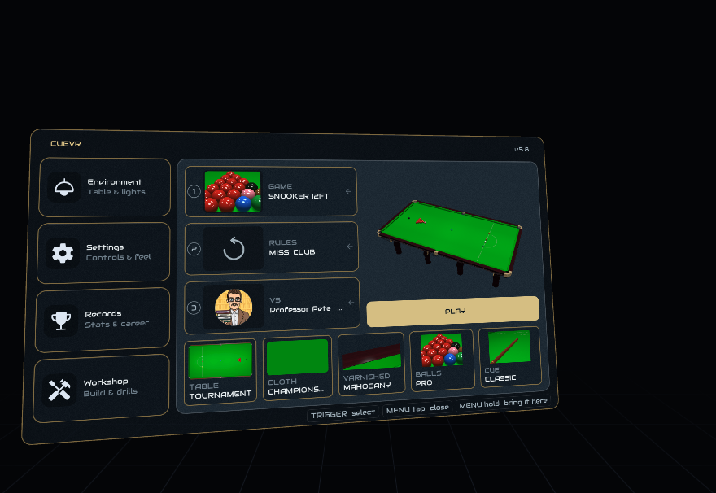
Finding your way
Almost everything lives on one of two screens: the main menu before a frame, or the pause menu during one. Both open on a sheet of glass in front of you. The glass does not stay where you last left it: every time you open it, it comes up facing you where you are standing now.
The main menu is three numbered steps that set the frame — GAME, RULES and VS — with PLAY beside them. Under the steps is a strip of five panels for how the table looks: TABLE, CLOTH, TIMBER, BALLS and CUE. Down the side are four tiles for everything else: Environment (the table, the scoreboard, the mark round your real table, calibrating a real cue, the lights, the room and a venue of your own), Settings (controls, cue feel, graphics, and sound: the referee, the crowd and voice chat), Records (stats, games played, replays, career) and Workshop (build a table, a ball set, a cue or a challenge).
Point at any of them, pull the trigger, and you get a page of cards or swatches to point at, with the one you are on marked. Nothing steps through a dozen stops one at a time, so reaching a game like COWBOY POOL is one press and then a card.
MENU closes the menu. Holding MENU brings it to where you are standing, from anywhere — including in the middle of a frame.
Where to go for what
| What you want | Where it is |
|---|---|
| Different balls | BALLS, on the strip along the foot of the main menu. It opens the gallery of all twenty-seven sets. |
| A different game | Step 1 GAME. It opens the gallery of cards; step 2 RULES underneath carries the variants of whatever you picked. |
| A different opponent | Step 3 VS — the computer at eight strengths (singles or doubles), a game online, a career, an event, or practice. |
| Moving makes you feel sick | Settings → Comfort. See Comfort. |
| A match you left | CONTINUE MATCH on Home, or SAVED MATCHES beside it for the rest. See Saving and resuming. |
| Play with a real cue or a pen | Settings → Cue feel → CALIBRATE A REAL CUE, and Settings → Controls → CUE to switch between CONTROLLERS and REAL CUE. See Playing with your own cue. |
| Cue deflection | Settings → Cue feel → CUE DEFLECTION, from NONE to 5 degrees. |
| Line the drawn cue up on my real one | Tap either side trigger, then press and hold it, at the table — and move your cue onto the frozen one. See Fine-tuning it. |
| How the sticks move you | Settings → Controls → TABLE MOVEMENT. ONE STICK, EITHER puts the same control on both hands, which is what you want with a cue in your hands. See One stick has to do everything. |
| Cloth and timber | CLOTH and TIMBER on the strip along the foot of the main menu. |
| Lighting and surroundings | Environment → Lighting or Surroundings. Your room, the dark hall, the arena, the pub, the snooker club, the dining room, the library and your venue are also chips on the pause menu, since that is the one you change mid-frame. Online, Host's room there puts you in the host's room. See Playing in the host's room. |
| A venue of your own — a pub, a club, an arena, a studio or a theatre | Environment → Venue. See Your venue. |
| Play tour matches at the event's own venue | Environment → Surroundings → Tour matches at the event's venue. See Where the events are played. |
| The crowd: how it looks and how loud it is | VENUE CROWD on Environment → Surroundings; CROWD on Settings → Sound. See The crowd. |
| Talk to the other players online | Settings → Sound → YOUR MICROPHONE. See Voice chat. |
| Resolution, anti-aliasing, ball reflections | Settings → Graphics, which also prints what the last frame cost. |
| Move the table, or set its height again | Environment → Table, or the Table square on the pause menu. |
| Move the scoreboard | Environment → Scoreboard. See Pinning the scoreboard. |
| Pocket size | Workshop → Table, or the TABLE panel on the strip, which carries the pocket templates. |
| Bring the menu back to where I am standing | Hold MENU for a second, from anywhere. |
| The rules of the game you are in | MENU in a frame → RULES OF THIS GAME. |
| A scorecard | MENU in a frame → SCORECARD, at golf and bowlliards. |
| Practice tools, drills, the clearance clock | MENU in a frame, with the opponent set to FREE PRACTICE: they are chips above the squares — move the balls, the timed six, and the challenges. |
| Stop the colours going back on | The Auto respot chip on the same pause menu. On, they come back until the reds are gone and then stop, so you can play a clearance. |
| Things other players have made | GALLERY, beside the title in the Workshop and on the cue, ball, challenge, cloth and timber pickers. See Sharing and the gallery. |
| Keep the look of my table | STYLES, beside the title on the cloth and timber screens. See Table styles. |
| Give a friend my cue, ball set, challenge or table style | SHARE on its screen gives a six-letter code; they type it into ENTER A CODE (FROM A CODE for a challenge). |
| A target to play position to | Target on on the same pause menu, in practice or a challenge; Move the target puts it where you want it. See The target. |
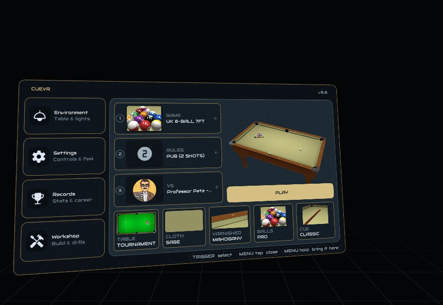
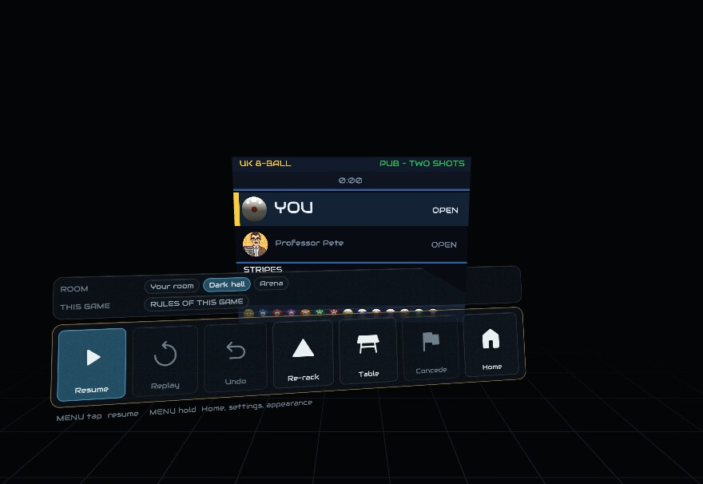

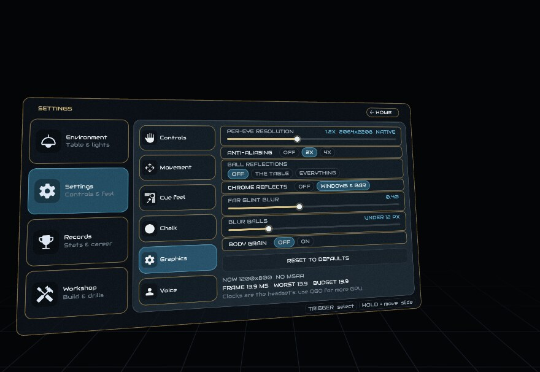
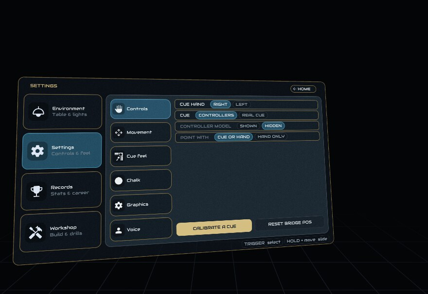
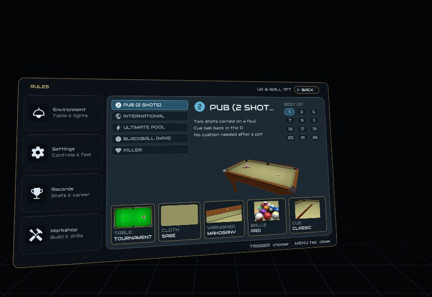
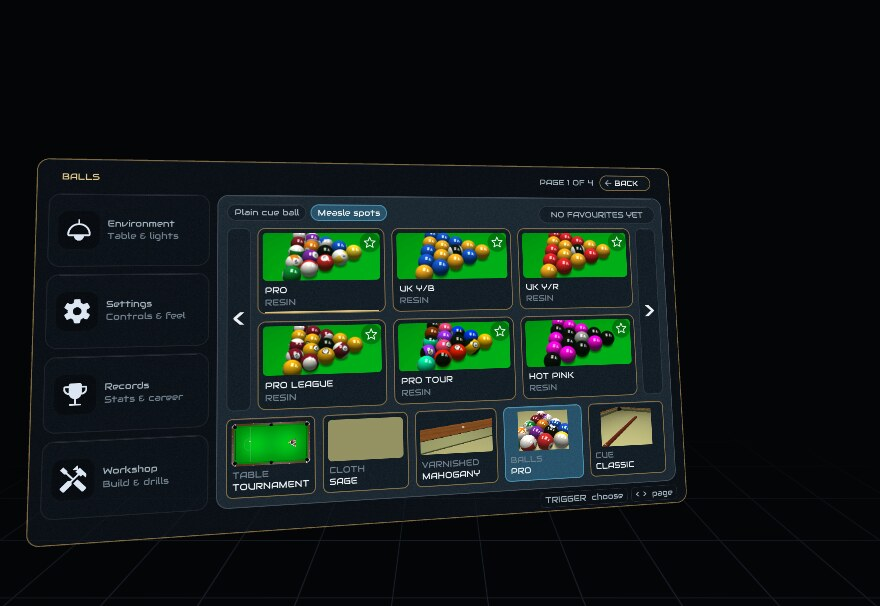
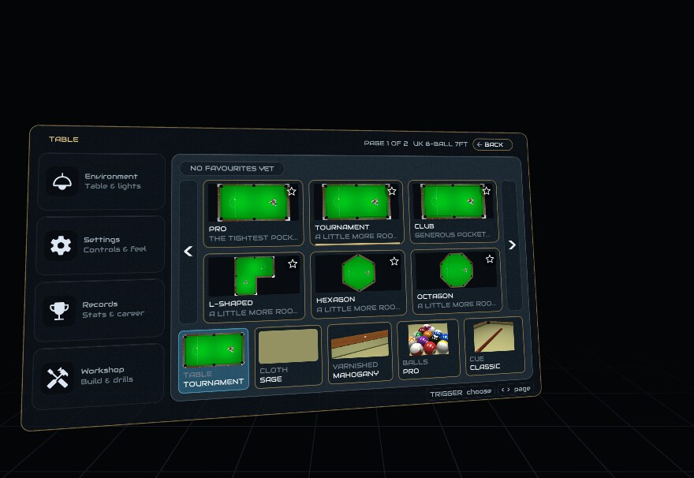
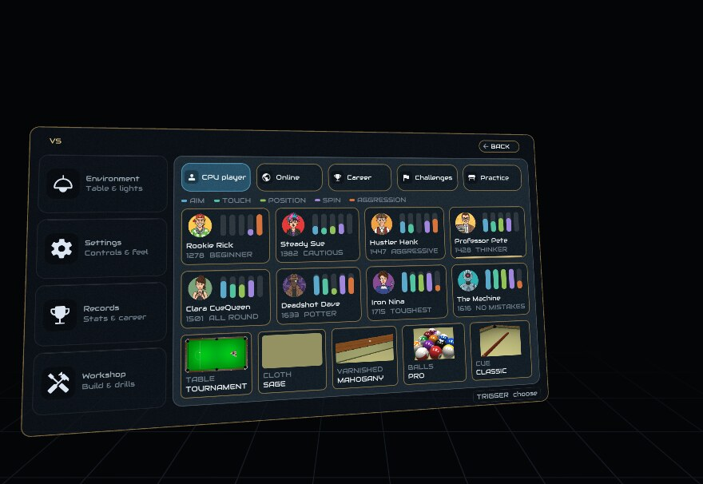

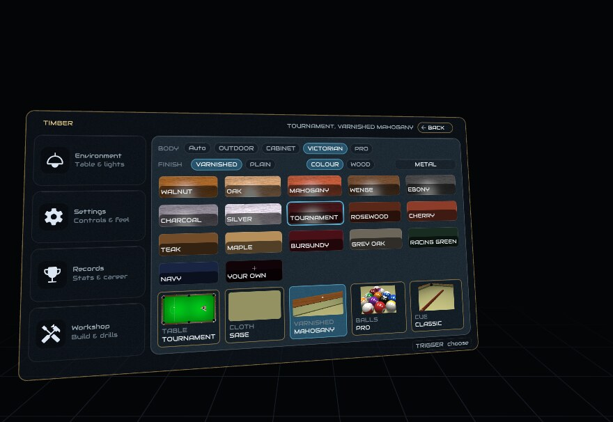
Setting up the table
One panel, and every way in opens the same one.
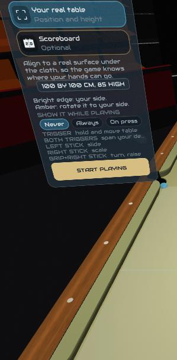
The first thing you do is mark the real surface you are playing over: a desk, a dining table, the end of a bed. The game table then stands on it. You do not set the cloth's height separately and you do not turn the cloth separately — where that outline is and how high it is decides all three, so the rail lands over your real edge and your bridge hand comes down on something solid.
| Control | What it does |
|---|---|
| Trigger, held | The outline comes with your hand — where it is, how high it is and which way it runs, all at once. Let go to leave it there. This is the quickest way by a distance: stand at your desk, point along it, pull. |
| Both triggers, held | Your two hands become the near edge of the outline, so its width is the width of your reach and its angle and height come with it. Put a hand on each corner of your desk and pull. Two controllers only. |
| Left stick | Slides the outline. |
| Right stick | Makes it bigger or smaller. |
| Grip + right stick | Turns it, and raises or lowers it. |
| Grip a corner | Drags that corner to where your real corner is. |
| A, or DONE | Finished. It is kept between sessions. |
Whether the outline shows while you play is on the same panel: Never, Always, or On press — a short press of your butt hand's upper button brings it up for a couple of seconds. It is that hand and not the other, because the bridge hand's upper button belongs to the rest.
A real snooker table has its bed about 85 cm off the floor, which is where the panel starts. You do not need a room big enough for the whole table: the sticks slide and turn the table at any time, including in the middle of a frame, so bring the part you need into the space you have.
To come back to the panel: press MENU and choose the Table square, or open Environment → Table from the main menu. Both open this same panel.
Pinning the scoreboard
The scoreboard normally hangs above the far end of the table and moves with it. If you would rather it lived somewhere real — a wall, or a television that is switched off — tap Scoreboard, the second step on the table panel. Grip the board, carry it to where you want it and let go; it stays flat where you left it. Press A when you are done. It keeps that place between sessions, exactly as the table does, until BACK TO AUTO puts it back above the table.
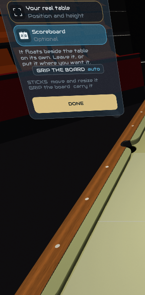
The arena and the rooms have screens of their own. A pinned board is a place in your real room, and they are not your real room — so while you are in one the scoreboard goes where that room keeps it: the arena's screen in the far wall, the pub's television, the club's board at the head of the table, the dining room's gilt frame and the library's frame among the books. Your pinned position is not lost: it comes back the moment you go back to your own room or the dark hall.

Controls
Both controllers hold the cue. The buttons do a small number of jobs, and the two side triggers are the ones worth learning. The side trigger is the grip button on the side of the controller, under your middle finger; some of the panels in the game call it GRIP.
The cue lies between your two controllers, so both hands aim it together: the line of the shot is the line between them. One hand is your bridge hand, where the front of the cue rests. The other is your butt hand, which holds the end and plays the stroke. Which physical controller is which depends on the handedness setting, so everything below names the two hands rather than left and right.
| Control | What it does |
|---|---|
| Bridge hand | Sets your bridge position — where the front of the cue rests. |
| Butt hand | Holds the butt of the cue. Moving it forward is the stroke. |
| Butt hand trigger | Takes the shot. Pull it to commit — that locks the line the cue will travel along, so your aim cannot drift while you deliver. Keep it held and move the hand forward through the ball. Release when the shot is played. |
| Butt hand side trigger (hold) | Slides the cue through your bridge, so more or less of it sticks out in front. This is how you shorten up for a shot against a cushion. Your aim stays where it is. |
| Bridge hand side trigger (hold) | Sets where the cue sits relative to your controller, so the bridge falls in a position that is comfortable for you. Hold it and move the hand; the cue stays put and the offset changes. |
| Bridge hand side trigger (double tap) | Puts that offset back to the default. PUT THE BRIDGE AND GRIP BACK, on Settings → Controls, does the same thing. |
| RULES (step 2 on the main menu) | Which rule book the frame is played to — and on two cards, which GAME. UK 8-ball
offers PUB (2 SHOTS), INTERNATIONAL, ULTIMATE POOL, BLACKBALL (WPA) and KILLER. The snooker
games choose how strictly a miss is judged, with SHOOTOUT and THE 900 beyond it. Straight
pool and 10-ball choose whether pockets have to be called, and carom chooses which of its
five games you play.
US 8-ball's row is the long one. After its three rule books come eight more games played on that same nine-foot bed with the same fifteen balls, differing in what scores rather than in anything you could photograph: KILLER, ONE POCKET, BANK POOL, ROTATION 61, FILIPINO ROTATION, 15-BALL, COWBOY POOL, HONOLULU, SPEED POOL and CRIBBAGE POOL. They are there rather than on cards of their own for the same reason KILLER always has been — the bed, the rack and the balls are the same, so a card apiece would be the same photograph ten times. BOWLLIARDS is not on that row, though it is played on the same bed. The others are one rack contested between two players; bowlliards is ten racks, each cleared on your own against a card. That is golf's shape of game rather than eight-ball's, so it sits on the main list beside golf. The row opens a page rather than stepping. Click it and the rule sets appear as a list you point at, with the one you are on marked and what it changes written beside it. Stepping twelve stops one push at a time is no way to find COWBOY POOL. |
| Bridge hand's upper button Y or B | Takes up the rest, and each press after that steps to the next notch. Hold it to put the rest away. Which physical button this is depends on your handedness: it is Y for a right-hander and B for a left-hander, because it is always the hand that is not holding the butt. |
| Butt hand's upper button B or Y (tap) | Shows the mark round your real table for a couple of seconds, if you have set one. Held, in practice, it takes the last shot back. |
| Thumbstick, pressed in (only with a real cue set up) |
The same two things, on a button a clamped hand can reach: a tap shows the mark, a hold takes the last shot back. Either hand. With two controllers this does nothing, and the controls are exactly as they were. |
| X (hold) | Swaps the scoreboard for a live photograph of the table from above, for as long as you hold it — the quickest way to read a position without walking round. |
| Left stick | Slides the table around the room. Works at any time, including mid-frame, on either hand. With Movement: Camera it walks you instead. |
| Right stick | Turns the table. Also at any time. Between the two sticks you can bring any shot in front of you without walking. With Movement: Camera it turns you instead. |
| Trigger (in menus) | Selects the row or item you are pointing at. |
| A and B | Confirm and go back. |
| MENU | Pauses the game. Only the left controller has this button — if your cue is clamped to that one, the scoreboard shows a MENU row you can point at instead. |
Movement: Table or Camera
The sticks can move the table or move you. MOVEMENT is a row on the pause menu, and Settings → Movement has it twice, because you may want it differently in each: MOVEMENT IN VR for the rooms the game draws round you, and MOVEMENT IN MIXED REALITY for your own room. The pause menu's row sets the one you are in.
| Setting | The sticks |
|---|---|
| TABLE | As described above: the left stick slides the table, the right stick turns it. This is the default. |
| CAMERA | You walk the room, as in a first-person game. The left stick moves you where you are looking and steps you to the side; the right stick turns you on the spot. The best way to explore the pub, the club and the library. |
Walls stop you. In the arena and the rooms, you cannot walk or slide through a wall, a bookcase or the bar. Walk into one and you slide along it. If you change to a smaller room while standing beyond its walls, you are brought back in towards the table.
Comfort: moving without feeling sick
Seeing the room move while your body stays still makes some people feel sick, and turning is the worst of it. Settings → Comfort has the usual remedies. It starts on FULL; if moving smoothly suits you, set COMFORT to OFF and everything is as it was. These work in the VR rooms and venues. Mixed reality is left alone, because your real room keeps you steady, except for ORBIT, which works in both.
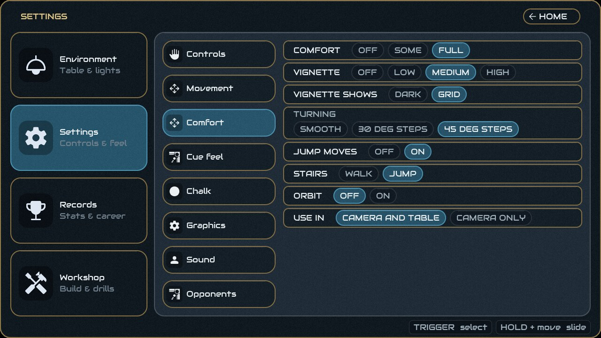
| Row | What it does |
|---|---|
| COMFORT | Sets the rows below together: OFF, SOME (a light vignette and stairs as a jump) or FULL (a medium vignette with the grid, 45 degree turns, jump moves and stairs as a jump). Change a row yourself and it reads CUSTOM. |
| VIGNETTE | While you move or turn, the edges of your view close in, more the faster you go, and open again when you stop. LOW, MEDIUM or HIGH. |
| VIGNETTE SHOWS | DARK edges, or a faint GRID of your real room, which stays still while the virtual room moves. |
| TURNING | SMOOTH, or in 30 or 45 DEG STEPS: one push of the stick, one step, however long you hold it. |
| JUMP MOVES | With Movement: Camera: push the left stick forward and an arc runs from your hand to the floor. Let go and you're there. Pushing that stick left or right turns you a step. The arc turns red where you can't stand. Land it on a staircase and you go up it, or down it from the top. |
| STAIRS | WALK up them, or JUMP: step onto a staircase and you arrive at the other end. |
| ORBIT | At the table, push the right stick and a gold pointer appears beside the cue ball, on the side you'll stand: push away for the far side, left or right to come round. Let go and you're there, facing the ball. Off unless you turn it on; it is not part of COMFORT's settings. |
| USE IN | CAMERA AND TABLE, or CAMERA ONLY to leave moving the table with the sticks as it was. |
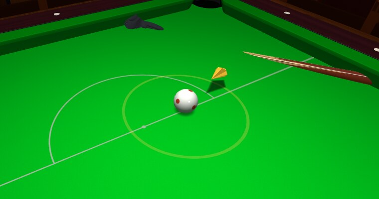
When your hands go below the table
Two rows on Settings → Controls, for controllers. Neither changes your aim or the stroke.
| Row | What it does |
|---|---|
| CUE RESTS ON THE TABLE | The cue lies on whatever is under it — the rail, the cushion or the cloth — instead of sinking into it, however low your hands go. Without it a cue pushed into the table buzzes and will not play the stroke. |
| BRIDGE ON THE TABLE | Your bridge stays where your hand puts it on the table, and follows you as you move. |
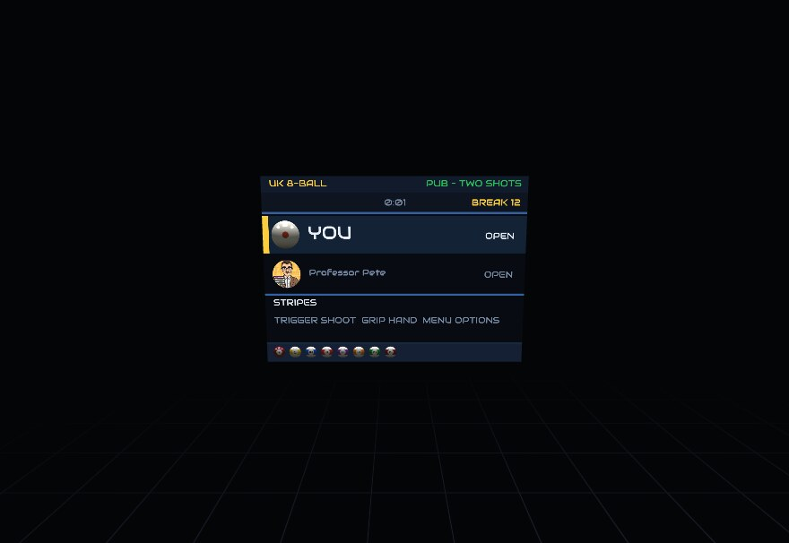

Playing a shot
The cue is a real object lying between your two controllers. The line between your hands is the line of the shot, and how fast you move the butt hand is how hard the ball is hit.
Step by step
- Put the tip on the ball. Bring the tip up to the cue ball and line it up with where you want to hit.
- Choose your spot on the ball. Raise the tip to hit above centre, lower it to hit below. Move it left or right for side. There is no menu for this: it is simply where the tip is.
- Commit. Pull the trigger on your butt hand. This locks the line the cue will travel along, so the shot goes where you aimed it and not where your hands wander to during the delivery.
- Stroke through. With the trigger still held, move your butt hand forward through the ball. How fast you move it is how hard the ball is hit: a slow push rolls it gently, a break shot needs a real swing. Release the trigger afterwards.
Ball in hand
When the cue ball is in your hand, it is held just in front of your butt hand's controller (with a real cue, in front of your free hand), and it goes wherever that hand goes. Carry it to where you want it and pull that hand's trigger to put it down. It drops straight onto the cloth and is moved into the area the rules allow, clear of any ball already there, so you cannot put it somewhere illegal.
Putting it down does not start your stroke. With controllers the same trigger holds the cue, so let go of it after placing, then press it again when you are ready to play.
Changed your mind? PICK UP BALL on the pause menu puts it back in your hand, until the stroke is played.
Shots you cannot reach
Bring the shot to you. The sticks move the table at any time, in the middle of a frame included: the left stick slides it, the right stick turns it. Nothing needs to be opened first and nothing is interrupted. For a shot tight against a cushion, hold the butt hand's side trigger and pull that hand back to shorten the cue. If you play over a real table, snap mode can step you into the table instead.
Playing off the rest
For a shot you cannot stretch to, take up the rest with Y on your bridge hand. A brass head goes down on the cloth on the end of an ash stick, and your cue lies in one of its notches: the head is the pivot, and the shot runs through it.
The controller is the butt of the rest, not a pointer. The stick is rigid, so it behaves like one: swing the butt left or right and the head stays where it is — the stick simply pivots about it — while pushing and pulling moves the head along the stick's own line. It is laid a foot short of the cue ball when you pick it up, on the line back to you.
To slide the head sideways, twist the butt and hold. Twist right and it travels right for as long as you hold the twist; come back to where you started and it stops where it got to. It is a throttle rather than a steering wheel, so your wrist never ends up somewhere it has to be unwound from. Both hands moving together carry the head across as well, which is how you shift a rest without lifting it.
The side trigger on the rest hand sends the head further out or draws it back in: hold it and the stick stops being rigid, so your hand's distance from the head becomes the new one. Let go and it is rigid again. The side trigger on your cue hand still sets the cue's own length, as it always does.
Y again cycles the notches — nine of them, at heights from 40 to 96 mm, taking in both faces of the head and both edges. Hold Y to put the rest away. It goes back in the rack by itself after each shot, and remembers which notch you favour.
Feather as much as you like: nothing is a stroke until you hold the trigger, and holding it locks the cue onto its line so the delivery cannot steer itself. The head is frozen from that moment, and it does not drift while you are down on the shot — it sits on cloth, and cloth grips.
Lagging for the break
Where the rule book has one, a match opens with a lag: both players send a ball up the table and back at the same time, and whoever finishes nearest the baulk cushion has the choice. Yours is the white; your opponent's is the yellow.
A lag must reach the top cushion — anything short of it is no attempt at all, and so is a ball potted, driven off the table, or never struck. A fouled lag loses however close it finished, and if neither is any good, or there is nothing between them, it is played again.
The winner chooses who breaks, which is not the same as winning the break. The choice comes up on its own screen — I'LL BREAK or THEY BREAK — pointed at and pulled like every other list in the game. It happens once, at the top of the match, and every frame after takes its break from what the lag decided.
Pool, UK 8-ball, Chinese 8-ball and the Shoot Out all lag, because their rule books say so. Snooker and English billiards do not: their break is drawn for and then alternates. Practice never lags — there is one seat at the table and nobody to decide the order of play with.
Playing with your own cue
Fix a controller to a real cue and you play with the cue in your hands: your own bridge, your own stroke. First you show the game, once, where the controller sits on your cue. After that the cue on the table goes wherever your real one goes.
Once it is set up, the cue plays the ball when its tip reaches the ball, just like a real one. There is no button to press to strike.
Before you start
- Fix the controller on tight. If it can wobble or twist on the cue, the drawn cue wobbles too. If you move it later, you will need to set the cue up again.
- Stand where you play, with your cue in your hands.
- Set the table height first: Environment → Table, or Table on the pause menu. The set-up is done at that height.
Open the set-up screen
Go to Settings → Cue feel and press CALIBRATE A REAL CUE, at the bottom of the list. The table disappears while you are on this screen, so nothing is in the way, and you see your own room even if you play in the dark room, the arena or one of the other rooms, so you can see the cue you are lining up. Your surroundings come back when you leave the screen.
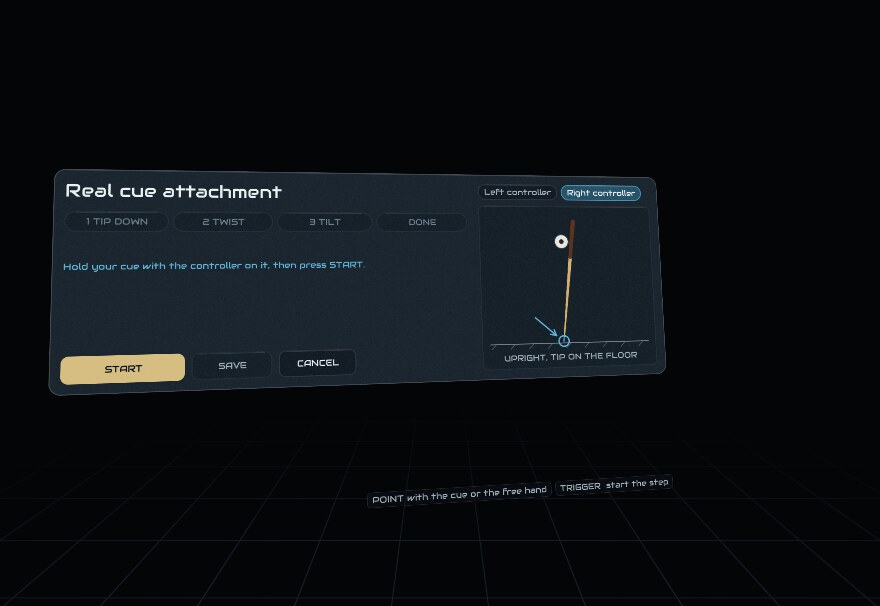
- Say which controller is on your cue. On the second row, press Left controller or Right controller. Do this first: everything else depends on it.
- Pick a method on the top row:
- Quick - assumes 1.45 m takes about ten seconds. Use it for a normal full-length cue, about 57 inches (1.45 m) long.
- Accurate - two swings takes about a minute. It measures your cue, so use it if your cue is shorter or longer than that, or if Quick leaves the tip in the wrong place.
- Press START.
Quick
- A grey cue floats in front of you. If it is too high or too low to hold your cue against comfortably, push either thumbstick up or down to move it.
- Hold your real cue along the grey one: your tip on its tip, your butt on its butt. Get it as close as you can by eye.
- Pull the trigger, the one under your first finger, on either controller.
- Press SAVE. Your cue is now switched on.
If the tip looks a little out afterwards, do not start again. Use the fine-tune below.
Accurate
This way you do not line anything up by eye. You rest one end of the cue on something that does not move, and swing the other end around it. The end that is resting stays still while the controller moves round it, so the game can tell exactly where that end is. It does this for the tip and then for the butt, which also tells it how long your cue is.
- Press START. The screen says Tip on something solid, then pull the trigger.
- Rest the tip on something firm that will not slide: a table top, the seat of a chair, the floor. Hold the butt the way you hold it when you play, not twisted round in your hand: this is how the game learns which way up your cue is. Then pull the trigger. Nothing is measured until you do, so take your time getting settled.
- Keep the tip exactly where it is, and slowly swing the butt round it: left and right, and up and down as well, as if you were stirring a big pot with the butt. Two bars on the screen, ACROSS and UP AND DOWN, fill up as you go. Keep going until both are full.
- A small marker shows where the game thinks your tip is. If it sits on your tip and stays there while you swing, it is right. The screen says Tip found - trigger to go on. Pull the trigger.
- Now turn the cue round. Rest the butt on something firm, pull the trigger, and swing the tip round it in the same way until both bars are full.
- The screen says Measured - trigger to finish. Pull the trigger. It then shows the length it measured, for example 1.45 m of cue. If that is about the length of your cue, it worked. If it is clearly wrong, 0.4 m say, the resting end moved: press START AGAIN.
- Press SAVE. Your cue is now switched on.
Fine-tuning it with the side trigger
Neither method is perfect first time. This puts it right, and you can do it whenever you like, even at the table in the middle of a frame. The side trigger is the grip button on the side of the controller, under your middle finger.
- Lay your real cue on something flat, like a table or a desk, so it is still and you can see it clearly against the drawn cue.
- Tap the side trigger on the cue's controller, then press it again and hold it. The drawn cue freezes in the air and stops following you. The tap has to come first: your hand rests on that button all through a game, and the tap tells the game you mean it.
- Keep holding, and slide your real cue until it lies exactly under the drawn one: tip under tip, shaft under shaft.
- If CUE TURNS WITH YOUR WRIST is on, also roll your real cue until its markings, the points and the badge, line up with the drawn cue's.
- Let go of the side trigger. The drawn cue now follows your real cue from where you put it. It saves itself; there is nothing else to press.
Do it as often as you like. Each time replaces the last, so small errors cannot build up.
Small corrections by button
Open CALIBRATE A REAL CUE again when your cue is already set up, and it opens on your saved set-up with buttons for small corrections. Point at a − or + with your other hand and pull its trigger. Each press moves the cue by a tiny amount, and you can watch the drawn cue move against your real one.
| Button | What each press does |
|---|---|
| Tip out | Moves the tip further along the cue or back, 1 mm. |
| Tip sideways | Moves the tip left or right, 1 mm. |
| Tip up | Moves the tip up or down, 1 mm. |
| Aim sideways | Turns the whole cue left or right, a tenth of a degree. |
| Aim up | Tilts the whole cue up or down, a tenth of a degree. |
| Cue rotation | Turns the drawn cue round its own length, a degree, so its points and badge face the same way as your real cue's. The CUE ROTATION slider beside the buttons turns it further in one go. |
Every press saves straight away. Press SAVE when you are done. START AGAIN throws the set-up away and starts from nothing.
Controllers drift a little over a session and clamps get knocked. Put it right with the side trigger at the table; you only need to set up from the start again if you change cue or move the controller.
One stick has to do everything
A controller clamped to a cue is on the end of a metre and a half of timber. The game assumes you cannot reach it, so with a real cue set up, everything you need is on the hand that is free.
Nothing here is different for the ordinary two-controller cue — those controls are exactly as they always were. It only changes once a cue is calibrated and CUE is set to REAL CUE.
One stick cannot do two things at once, so the side trigger switches what it is doing. It is the same gesture on all three screens that need it, and the panel always says which job the stick is on — you never have to remember.
| Where | The stick | The side trigger |
|---|---|---|
| Placing the table (MENU → Table) |
Sets the height, and turns the table left and right. | Switches the stick to sliding the table about instead — forward, back and sideways. Squeeze it again to go back to the height. |
| The mark round your real table (the square) |
Moves it. | Steps the stick through move, size and turn. It turns both ways. |
| The scoreboard (Scoreboard on the placement screen, or Environment → Scoreboard) |
Carries it. | Steps the stick through move, turn and raise, and size. |
| At the table, during a frame | Moves the table — see the next section. | Holds the drawn cue still so you can line your real one up on it. It does nothing else while you are at the table, so it can never be doing the wrong job when you reach for it. |
| Lining up the cue (CALIBRATE A REAL CUE) |
Raises and lowers the grey cue you are matching. | Holds the drawn cue still. Let go and it re-learns your cue and saves it. |
The buttons a clamped hand cannot reach
| Control | What it does |
|---|---|
| Press the thumbstick in (tap) | Shows the mark round your real table for a couple of seconds. Normally that is the cue hand's upper button, which is the one you cannot get to. |
| Press the thumbstick in (hold) | Takes the last shot back, in practice. A hold rather than a tap, so a stray press cannot rewind the table. The bar on the panel shows how long is left. |
| Point with the cue | Menus can be pointed at with the cue itself, as well as with either hand. Whichever is easier where you are stood. |
| A on the levelling screen | Works from either hand. |
| MENU row on the scoreboard | Only the left controller has a MENU button. If your cue is clamped to the left one, your free hand has no way of opening the pause menu — so the scoreboard grows a MENU row you can point at instead. It appears only when you need it. |
The rest of the settings
Settings has eight tabs: Controls (which hand, real cue or controllers, and the button that calibrates a cue), Movement (how the sticks move the table or you), Comfort (see Comfort), Cue feel (the rows below), Chalk (see Chalk), Graphics, Sound and Opponents.
| Row | What it does |
|---|---|
| STROKE | SMOOTHED filters the tremble out of your aim and the sideways movement of the tip while leaving the delivery — and therefore the power — untouched. It is what a bridge hand does, and it is on by default: a real cue in real hands shakes in a way a virtual one does not. AS YOU CUE IT leaves the cue exactly where your hands put it. |
| CONTROLLER MODEL | HIDDEN by default: the drawn controller sits on the shaft where your clamp is, and depending where that is it can be the thing you are looking through when you are down on the shot. SHOWN puts it back. Only the one on the cue is affected — your free hand keeps its controller, since it carries the ball and points at menus. |
| CUE TURNS WITH YOUR WRIST | Rolls the drawn cue as you turn the real one, so the splice and the badge follow your hands. It is worked out separately from the aim and can only turn the model — it cannot move the tip or the line. Off by default. |
| CUE ROTATION | Turns the drawn cue round its own length, from 0 to 359 degrees, so its points and badge face the same way as your real cue's. It only turns the picture of the cue: your aim and your tip do not move. It works with CUE TURNS WITH YOUR WRIST on or off, and it is on the set-up screen too. |
| CUE TIP | How wide the tip is, in millimetres, stepping half a millimetre at a time from 8 to 14. The name beside the number is the game that size belongs to: 8–9 is English pool, 9.5–10.5 snooker, 11–12 carom, 12.5–13.5 American pool, and 14 is a break cue. A wider tip reaches further off centre before it slips, so it will hold more side. It starts at 10.0 mm. |
| CUE DEFLECTION | How far the cue ball is pushed off your aiming line when you strike it away from centre — squirt. The steps are real shafts: 0.5° is a carbon low-deflection one, 2.0° an ash snooker cue, and the range anybody has measured stops around 2.6°. It carries on past that to 5°, which is no cue that was ever made and is exactly why it is there. NONE takes it out altogether if you would rather practise without it. It starts at 2.0°. |
| STROKE WEIGHT | How much of your arm’s speed becomes cue ball speed on a soft or medium shot, from 55% to 90% in steps of five. Your arm swings a controller, not a cue, so it moves faster than the real thing and the honest figure depends on you and your room: turn it down if your gentle shots come out hard, up if you cannot get the ball down the table. A full power stroke is not affected — it is already flat out either way. It starts at 70%, which the row calls NORMAL. |
The Logitech MX Ink
The pen is a cue in its own right. Its buttons map to the ones the game uses:
| On the pen | What it is |
|---|---|
| Middle pad | The trigger. |
| Pressing the tip | The grip. |
| Front cluster button | The lower button — A or X. |
| Back cluster button | The upper button — B or Y. |
| Front button, double tap | MENU. |
| Back button, double tap | Clicking the stick. |
The double taps are the pen's own, not a gesture timed by the game, so they feel the same as they do everywhere else on the pen.
Your other controller stays live — it still points at menus, still bridges, still presses things. If you would rather it stood down while the pen is in play, Settings → Controls → OFF HAND has that; the row only appears once the game has actually seen a pen.
Moving the table with a cue in your hands
The table can be moved at any time, mid-frame included — that is how you bring a shot to you in a small room rather than walking round a twelve-foot table. With a controller clamped to a cue, though, one of your two sticks is on the end of a metre and a half of timber and the other hand may be empty. The TABLE MOVEMENT row on Settings → Controls chooses between three ways of working. Two are below; the third, SNAP TO THE EDGES, is for playing over a real table and has its own section further down.
| TWO STICKS | ONE STICK | |
|---|---|---|
| Left stick | Slides the table about the floor. | The hand that is not on the cue keeps sliding the table about the floor, exactly as it does in two-stick mode. Nothing is lost by switching. |
| Right stick | Turns the table. | |
| The cue hand's stick | — | Up and down brings the table nearer and pushes it away, along the line you are looking down. Left and right turns the table about the cue ball. |
| On each fresh push | Nothing. | The table swings so the cue ball is directly in front of you, at the range it already had — nothing comes towards you or moves away, it only comes round. Then the stick works along that line until you let go. |
The cue hand is the controller you clamped the cue to when you calibrated; with the ordinary two-controller cue it is whichever hand holds the butt. The table swings round once per push rather than continuously, so it cannot chase you around the room: let go, stand where you like, push again and the ball comes round from there.
Marking your real table
This is the first step of the table panel, and the one worth doing properly. If the cloth is drawn over a real piece of furniture you can lean on it, rest a bridge hand on its edge and walk into it safely — and the game table stands on whatever you mark, so marking it well is how the cloth ends up at the right height and the right way round.
Stand at the edge of your desk, point along it and hold the trigger: the outline comes to your hand, at your hand's height, running the way you are pointing. Let go and it stays. From there the left stick slides it, the right stick sizes it, grip with the right stick turns and raises it, and you can grip any corner and drag it onto your real corner. RESET THE OUTLINE puts it back under the table if you lose it.
Or use both hands: hold both triggers and the line between them is the near edge, so the width comes from your reach along with the angle and the height. A hand on each corner of your desk sets the whole thing in one go.
The bright edge is the side you play from; amber means you are standing at a different one and should rotate the outline round to you. Show it while you play — Never, Always, or On press — from the same panel.
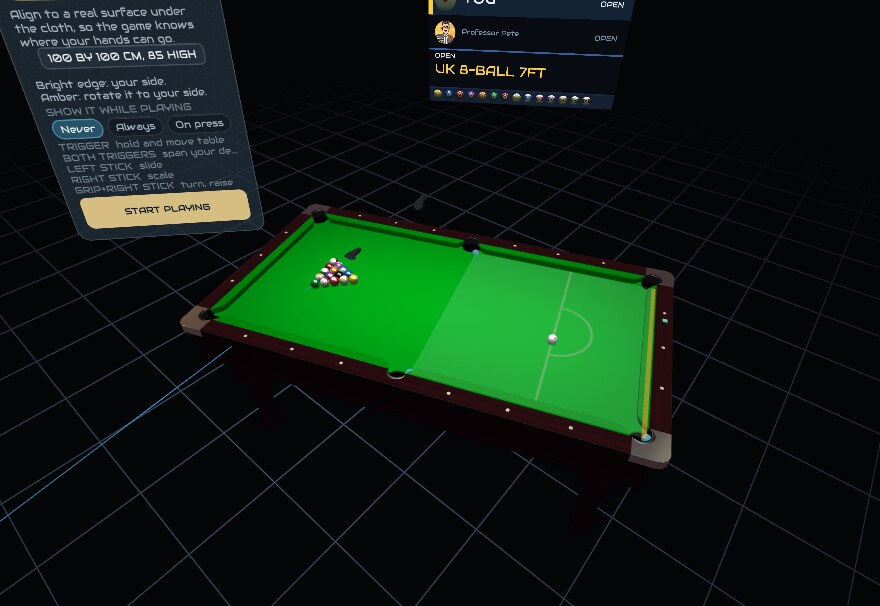
Snap to the edges
Once the mark is in, the TABLE MOVEMENT row has a setting built around it: SNAP TO THE EDGES. Stand at your real table's edge and the virtual table squares itself to the edge you marked — the outer wood of the frame lands exactly on your real edge, so when you rest your bridge hand on the rail it is resting on real timber.
- The slide stick slides the table along that edge, and nothing else. There is no forward or back, so the table can never drift off your real edge.
- The turn stick snap-turns: each push brings the next side of the table round to you, square on your real edge again. You can work all the way round the table without it ever leaving your furniture.
- Or point at the side you want. POINT AT THE EDGE, on the SNAP TURN row underneath, changes what the turn stick means: instead of stepping round one edge at a time, the stick becomes a picture of the table seen from where you stand. The edge under your hands is six o'clock, so pushing away brings the far side round in one press, and pushing left or right takes you to that side. On a hexagon or an octagon it still works, because the stick is read as an angle and rounded to whichever edge is nearest it.
- Hold the stick forward for a second and you step into the table, for the shots no edge can reach. Inside, you have full movement and 90° turns about the cue ball; the table goes back to your edge by itself after the shot, or when a new frame starts.
The games
Eighteen cards in the gallery, each on the table it is really played on — and several carry more games inside, on their RULES row, so there are thirty-two games in all. The rules below are the rules the game enforces — the referee applies all of them, so you never have to.
Click step 1 GAME on the main menu and you get a gallery rather than a list of names. Every card shows that game's table, racked, in the balls it is played with. Each table fills its own card, so the scale you are reading is the balls: a 67 mm pyramid ball on a twelve-foot bed covers much more cloth than a 50.8 mm pub ball on a seven-foot one.
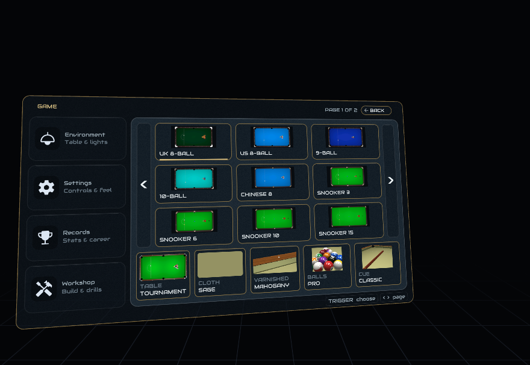
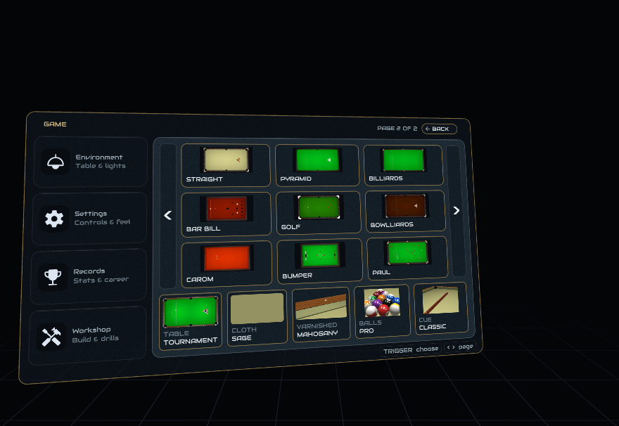
Snooker
Pot a red, then a colour, then another red, and so on. Each red you pot stays down; each colour goes back on its spot until the reds are finished. When the last red and the colour after it are gone, you clear the colours in order from yellow to black.
Values. Red 1, yellow 2, green 3, brown 4, blue 5, pink 6, black 7.
Nominating. When you are on a colour you have to say which one, and the game takes the colour you aim at.
Fouls are hitting nothing, hitting the wrong ball first, potting the cue ball, jumping the cue ball over a ball, and driving any ball off the table. The penalty is four points, or the value of the ball you were on, the ball you hit first, or the highest ball you potted — whichever of those is greatest. The points go to your opponent.
No cushion requirement. Unlike the pool games, a shot that hits the ball on and sends nothing to a cushion and pots nothing is perfectly legal — that is what a safety often is.
After a foul your opponent plays from where the balls are, or from in hand if the cue ball was potted. If the foul leaves them unable to hit the ball on, they get a free ball: they may nominate any ball as the one they are on, and it scores what the real ball on is worth.
Miss. Failing to hit the ball on is always a foul, and the referee judges whether it is also a miss — whether your attempt was good enough — at the standard set on the RULES row (see Rules and the referee). When a miss is called your opponent may make you play the shot again from exactly where it was. Failing to escape a snooker counts — that is the most common miss there is. The one exemption is when you can no longer catch up on the balls left on the table: a player needing snookers is not called for a miss, so a hopeless frame cannot be dragged out by replays.
Three misses in a row lose the frame, but only genuine ones: a miss played from a snooker does not count towards it.
The end. Once the black is potted the frame is over. If the scores are level, the black is respotted, the player who did not pot it plays first from in hand, and the next score wins.
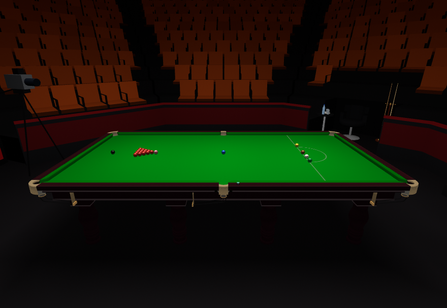
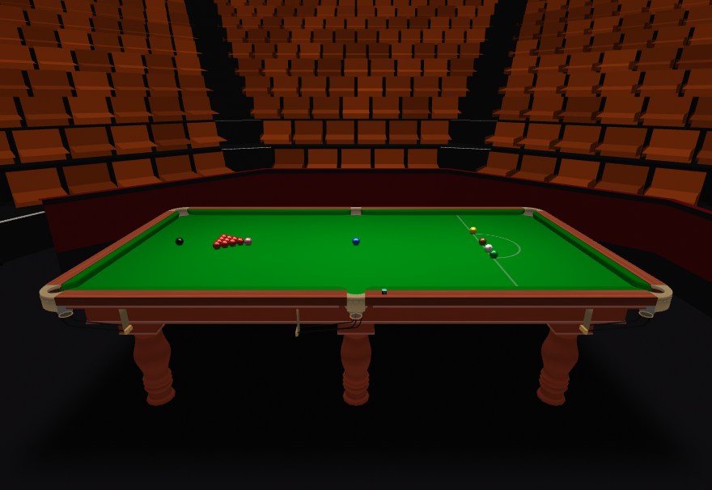
10-red snooker
Exactly the rules above — reds and colours, the same values, the same fouls, free balls, misses and respotted black — with ten reds instead of fifteen, on a ten-foot table.
A frame takes about half as long as the fifteen-red game.
6-red snooker
Snooker again, unchanged in every rule, with six reds on a seven-foot table.
Every ball is within reach of the cushions and frames are short.
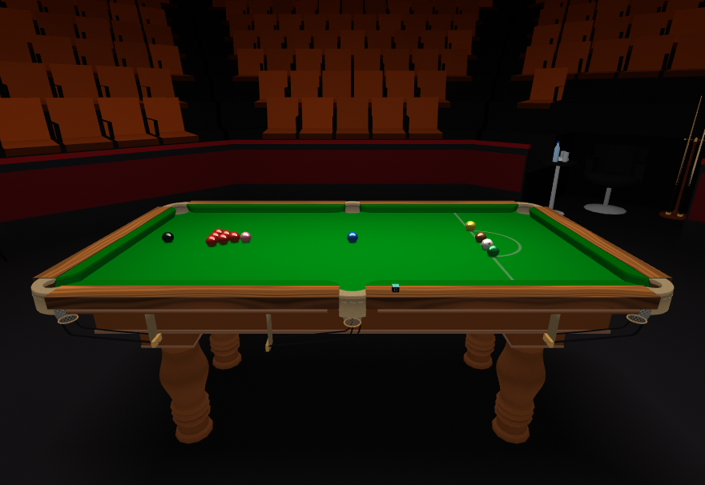
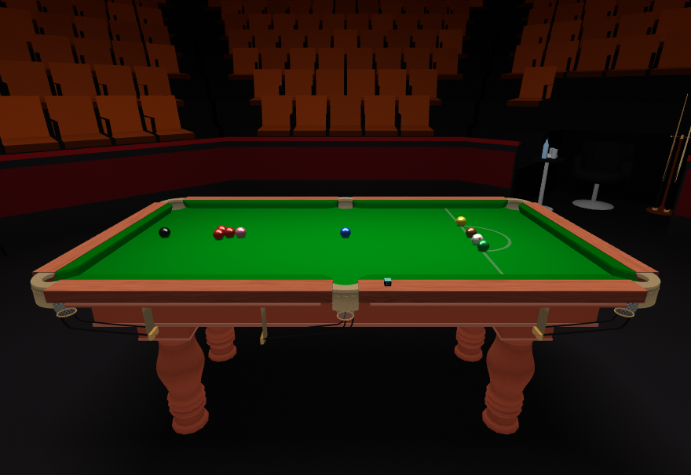
3-red snooker
The same bed, the same balls and the same rules as the six-red game, with a two-row triangle instead of a three. A frame runs to 51 and takes a few minutes, which is what the format is for — a whole match in the time one snooker frame would take.
It shares the snooker RULES row, so the miss standards, the Shoot Out and THE 900 are all available on it.
THE 900 is the fifth stop, and it is the Shoot Out with a longer frame: fifteen minutes — nine hundred seconds, which is where it gets its name — and a flat twenty seconds a shot that never steps down. Every other rule is the Shoot Out's, tie-break included. The extra five minutes and the slower clock change what the format asks of you: the
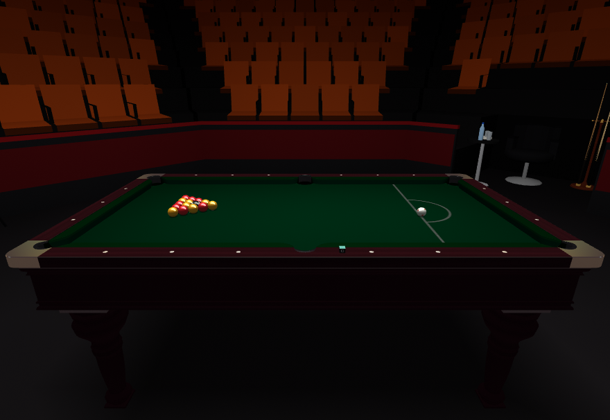
UK 8-ball
The pub game. The table is open until somebody pots a colour, and that colour becomes theirs; the other player takes the rest. Clear your seven, then pot the black to win.
Fouls, in every rule set: potting the cue ball, hitting nothing at all, hitting the other player's colour first, hitting the black before you are on it, and driving any ball off the table. Jumping the cue ball is not a foul in pool — except at BLACKBALL, whose book forbids it.
The black: potting it before your own colours are gone loses the frame, as does fouling on the shot that pots it.
What differs between PUB, INTERNATIONAL and ULTIMATE POOL is what a foul costs you, whether a shot has to reach a cushion, and what happens if the black goes in off the break. The fourth set, BLACKBALL, is described after the table. Choose on the RULES row of the main menu.
| PUB (2 SHOTS) | INTERNATIONAL | ULTIMATE POOL | |
|---|---|---|---|
| After a foul | Your opponent gets two visits. The cue ball stays where it finished. | One visit, ball in hand anywhere on the table. | |
| If the cue ball was potted | They play from in hand, behind the baulk line, inside the D. | Anywhere on the table, like any other foul. | |
| The first of the two shots | Free — they may hit any ball. Potting one of their own cancels the second shot. | Not applicable: there is only one visit. | |
| Must a shot reach a cushion? | No. A shot that pots nothing and touches no cushion is legal. | Yes. Pot a ball, or send some ball to a cushion after the contact, or it is a foul. | |
| Black off the break | Put back on its spot, break stands. | Put back on its spot, break stands. | Golden break — you win the frame. With the cue ball as well, or with any other foul, you lose it: the golden duck. |
US 8-ball
WPA rules. The table is open after the break — whatever you pot first decides whether you are solids or stripes — and once your group is clear you are on the 8.
Fouls are potting the cue ball, hitting nothing, hitting the other group first, hitting the 8 first while the table is open or before your group is clear, hitting anything other than the 8 once you are on it, driving a ball off the table, and — as WPA rules require — playing a shot that neither pots a ball nor sends any ball to a cushion.
Ball in hand. Any foul gives your opponent the cue ball anywhere on the table, not just behind a line. It is a heavy penalty.
The 8. Pot it after your group is clear and you win. Pot it early, or foul on the shot that pots it, and you lose. On the break it is simply put back.
The RULES row carries four ways to play it. WPA 8-BALL is the code above and calls nothing. CALL THE BLACK asks for the last one only, which is how most people play it. CALL SHOT (WPA) is the rule book to the letter: ball and pocket declared on every stroke. KILLER is the pub elimination game on the same table. ULTIMATE POOL USA, at the end of the row, is Ultimate Pool's rules — its break requirement and its golden break — played on this American table.
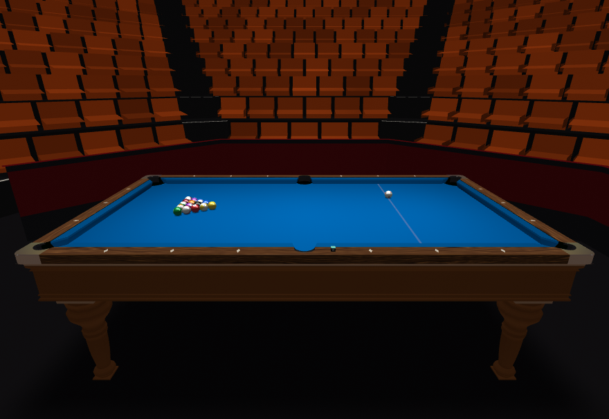
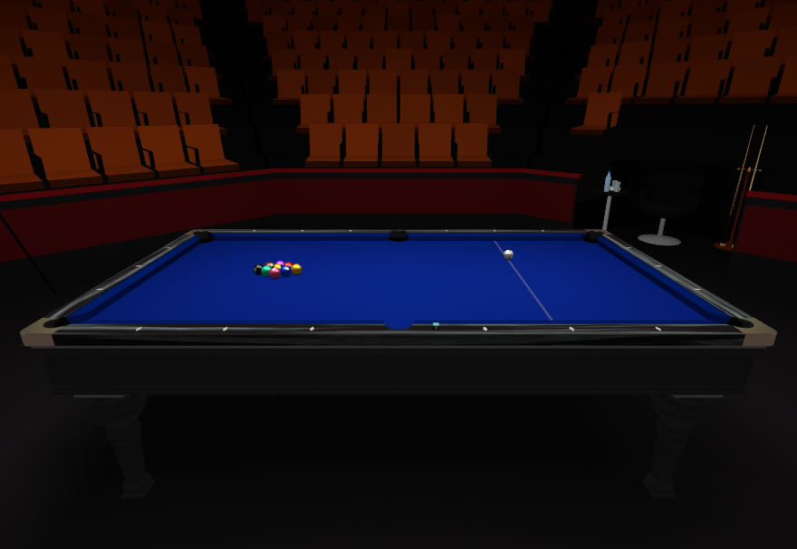
9-ball
You must always hit the lowest numbered ball on the table first, but any ball may then go in. Pot the 9 legally and you win at once — including straight off the break, and including off a combination.
Fouls are potting the cue ball, hitting nothing, hitting anything other than the lowest ball first, failing to pot a ball or send any ball to a cushion after the contact, and driving a ball off the table.
Ball in hand anywhere on the table for the opponent, as at US 8-ball. If the 9 was potted on a foul it goes back on its spot. Three fouls in a row loses the frame.
The push-out. The player who takes the first shot after the break may declare a push-out: they may hit the cue ball anywhere they like, with no need to hit the lowest ball or reach a cushion, and the only foul is potting the cue ball. A 9 potted on a push-out goes back. Afterwards their opponent decides whether to play the resulting position or hand it straight back.
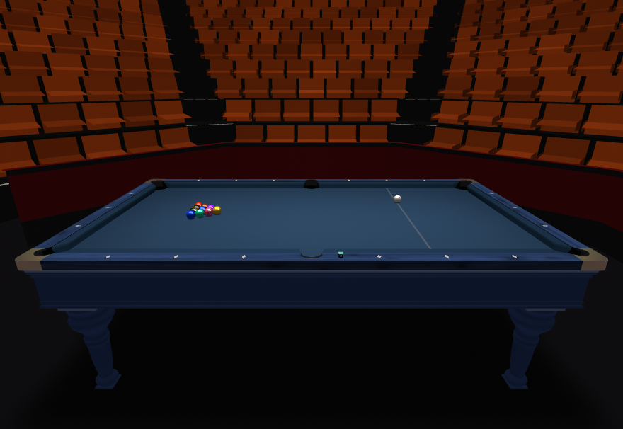
10-ball
The same bed and the same rotation game as 9-ball: lowest ball first, any ball may then go in, three fouls in a row loses the frame, and the money ball ends it. The rack is what changes — ten balls out of a triangle instead of nine out of a diamond. A diamond opens up off almost any break and a triangle does not, so the table stays cluttered and the lowest ball is more often tied up.
The rack puts the 1 on the foot spot at the apex, the 10 in the middle — the centre of the third row — and the 2 and 3 on the two back corners, rows of one, two, three and four.
Fouls and ball in hand are 9-ball's exactly, including the cushion requirement and the push-out on the first shot after the break. The 10 potted off the wrong ball first is a foul: it goes back on its spot and your opponent has the table.
Chinese 8-ball
Pool balls and WPA 8-ball rules — identical to US 8-ball above, including ball in hand anywhere for any foul, and including the cushion requirement: a shot that neither pots a ball nor sends any ball to a cushion after the contact is a foul. Played on a ten-foot table built like a snooker table, with tight rounded pockets and dressed in the same napped baize.
Those pockets are the whole difference. They reject a ball hit too hard and punish an approach that is even slightly off. Of the pool games it is the tightest at 1.50 ball widths, and only the two Russian pyramid tables are harder.
The RULES row carries four ways to play it. HEYBALL is the standard code and calls nothing — the obvious shots are exempt by the book, which is how the game is normally played. CALL THE BLACK asks for the last one only. CALL SHOT (CBSA) is the tournament reading, where ball and pocket are declared on every stroke. KILLER is the pub elimination game on the same table.
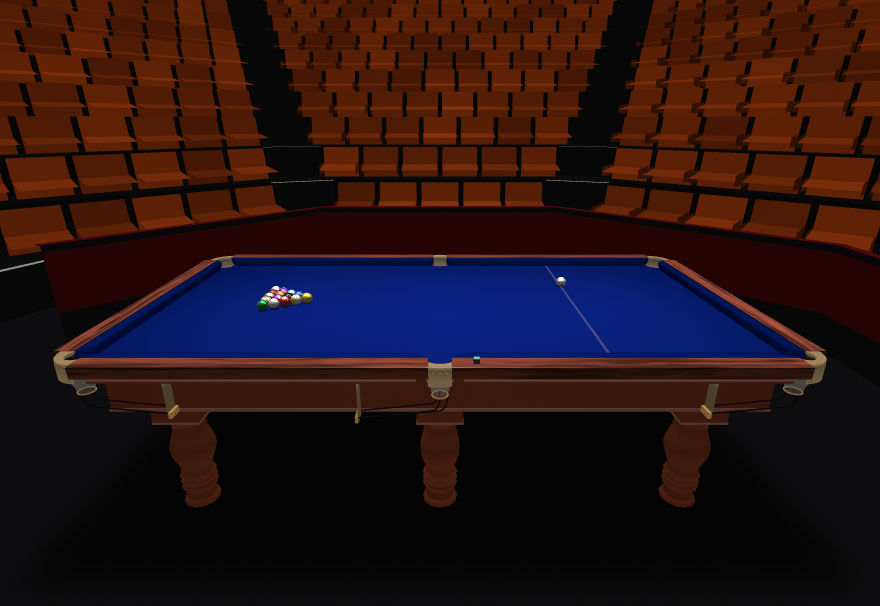
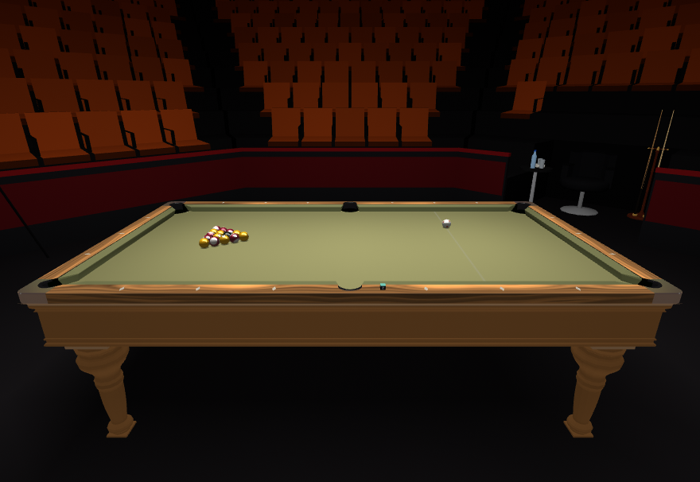
Straight pool
14.1 continuous, the old scoring game. There is no ball you must hit, no group and no order: every ball on the table is worth one point, whichever ball it is. You pick one, say it is going down, and if it does you score and carry on. First to 50 wins the frame — the real game is played to hundreds, this one is cut to a frame that fits a session.
Calling a ball. The ball you are aiming at is the ball you have called; there is no menu for it and nothing to press. Whatever your cue is pointing at when you strike is what you have declared. Aim at nothing in particular and you have called nothing, which makes the stroke a safety.
Scoring. Pot the called ball and it scores one, and so does every other ball that happened to go down on the same stroke — the accidental extra is a real part of the game. If the call is not made, nothing on that stroke counts and every ball that went down comes straight back up onto the long string behind the foot spot.
In practice it never runs out. With the opponent set to FREE PRACTICE, when one ball is left the other fourteen are racked again, as in the real game, so you can keep going.
Your visit. Keep making your calls and you stay at the table. Miss one and your opponent is in, and the board says MISSED CALL — or SAFETY, if you called nothing at all.
Fouls are potting the cue ball, hitting nothing, driving a ball off the table, and a stroke that neither pots a ball nor sends any ball to a cushion. A foul is minus one, and the opening break is the one stroke that costs minus two — the break has to send two object balls to a cushion or pot a called ball. Three fouls in a row costs fifteen more and the whole table is racked again with the offender breaking it.
The rerack, which is what continuous means. You never clear all fifteen. When one ball is left the other fourteen go back as a triangle with the apex space empty; the break ball and the cue ball stay exactly where they lie, and that break ball is what you use to open the new rack. Your visit is not interrupted — play carries straight on, which is why the fifteenth stays where it lies while the other fourteen are re-racked. Clear the table outright and all fifteen go back and you break from in hand.
Russian pyramid
Any of the fifteen is on, in any order, and each one you pot scores one. Eight wins: more than half, so it cannot be caught.
Pockets barely wider than the ball. A corner is under five millimetres wider than the ball and a middle fourteen (81 mm, as a tournament table's), on a ball 67 mm across, both measured at the narrowest point. That leaves a couple of millimetres either side of a straight corner pot. The middles are the wider of the two, the opposite of every other table here, and the jaws are cut as a straight mitre rather than the English curve. The point of each jaw is rounded as the federation's rules ask: 5 mm at the corners and 11 mm at the middles, and the cushion's nose stands 42 mm above the cloth.
Club tables. CLUB 12 FT and CLUB 7 FT, in the table picker, have the more forgiving pockets clubs keep for beginners and casual play: 74 mm corners and 83 mm middles on the 12 ft.
The house, not a D. You play from the дом: the whole width of the table behind the baulk line rather than an arc. A pyramid table has no D, so none is drawn.
Three sets of rules, on the card's RULES row: COMBINED (the default), CLASSIC and FREE PYRAMID. All three are first to eight, from the house.
COMBINED is the Russian federation's own discipline, and the one most played. The coloured ball is always the cue ball, and nothing is called: every ball potted on a fair stroke scores one.
- Pot the cue ball off a white and it counts too: you take any ball you like off the table for a point (look or point at it and pull the trigger), and play on from in hand in the house. From the house, the first ball you hit must lie outside it. If every ball is in the house, you play from the other end instead.
- The break has to open the pack: a ball potted, or three balls to a cushion, or two to a cushion and one across the centre line. If it does not, your opponent takes a ball for a point and then chooses: play on, make you play on, re-rack and break, or re-rack and make you break again.
- With nothing potted, a stroke is only fair if some ball, after the first contact, comes off a cushion and then touches another cushion, or drives a ball to another cushion, or crosses the centre line; or crosses the centre line and then reaches a cushion, or drives a ball to one. One cushion on its own is not enough.
- A foul — hitting nothing, a stroke that does not do enough, a ball off the table, a first ball struck in the house from hand — gives your opponent any ball off the table for a point. If the cue ball went in or off, they play from the house. Anything a foul potted, and any ball driven off the table, goes back on the spot.
CLASSIC is the game as it was first shipped. Fouls are hitting nothing, potting the cue ball, potting nothing and reaching no cushion, and driving a ball off the table. The penalty is the sting of the game: one of your own potted balls goes back on the table for your opponent to shoot at, and they play from in hand in the house. A frame can go backwards.
Fifteen plain ivories with a small black numeral on both poles, and a red cue ball. With fifteen identical balls, that colour is the only thing telling you which one you are about to strike.
Your opponent plays it as the game it is. On a pocket this size what decides a pot is not how thin the cut is but the angle the object ball ARRIVES at: much past twenty degrees off the middle of the hole it meets a jaw however well it was struck, which is why nothing is ever potted along a cushion here. The computer looks for balls already sitting on a line into a pocket rather than for balls it can cut in, and it will not give up such a line to buy itself a better angle on the next one — which is the trade every other game on the row is built around, and the wrong trade in this one.
FREE PYRAMID: the break is played from the house as usual; after that any ball can be your cue ball — whichever one your cue is lined up on is the one you strike. Every ball you pot counts, including the one you struck once it has hit another ball, and first to eight wins. A foul puts back whatever it potted, and your opponent then takes any ball they like off the table and scores it, naming it the way you name a ball (your CALL setting in the controls), and plays on from where the balls lie. A ball driven off the table goes back on the spot, and it is only a foul if it was the ball you struck.
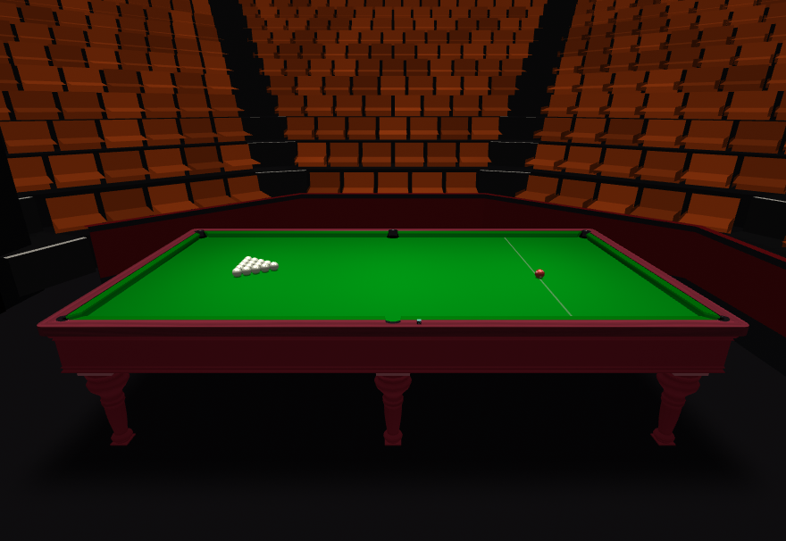
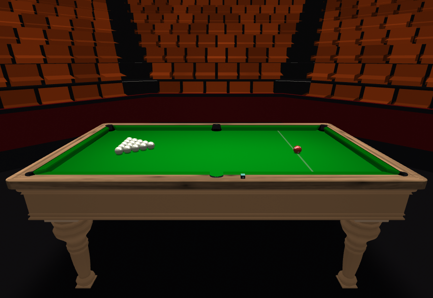
Pyramid, 7 ft
The same game, every rule unchanged, on the bed people actually own: 1.98 × 0.99 m with 57.15 mm balls, the smallest pairing the federation lists. It is not a card of its own — pick PYRAMID and then the 7 ft bed on the TABLE panel, which brings the smaller ball size with it.
The pockets keep the same clearance rather than the same size — five millimetres at a corner and fourteen and a half at a middle — so it is just as tight as the big one and everything is within reach. This is the one to try pyramid on.
English billiards
Two whites and a red on the full-size snooker table. There are no pockets to clear and no order to keep: you score by cannons, pots and in-offs.
| Stroke | Scores |
|---|---|
| Cannon — your ball touches both the others | 2 |
| Pot the other white, or go in-off the white | 2 |
| Pot the red, or go in-off the red | 3 |
They all count on the same stroke, so a cannon that pots both balls is seven. An in-off played with a cannon is priced by the ball you struck first — three if that was the red, two if it was the white.
An in-off leaves you in hand and you carry on. A legal stroke that scores nothing ends your turn and the table is played as it lies.
The red always comes back — on the Spot, or the Pyramid Spot if that is occupied, or the Centre Spot if both are. Pot the red over and over with nothing else in the stroke and it goes Spot, Spot, Centre in sequence. A potted white waits for its owner: it is off the table until their turn, and they then play from in hand.
Caps — 75 consecutive cannons and 15 consecutive hazard strokes. Exceeding either is a foul.
Every foul is two to your opponent and never more than two however many rules one stroke broke; the points already made in the break stand. A coup — in hand, cue ball pocketed, nothing struck — is a foul and not an in-off.
What the game is played to is set on the RULES row: 50, 75, 100, 150 or 200 up, or a clock of 5, 10, 15 or 30 minutes. On a clock the referee calls TIME, the stroke already played is allowed to finish and score, and the higher score wins; level scores are a draw.
Double baulk. Leave both object balls behind the baulk line while your opponent is in hand and they cannot play straight at either one: from the D the cue ball has to be played out of baulk, and no part of a ball that is in baulk may be struck directly. Breaking that is a foul. If they play out properly and simply fail to hit anything, that is a miss — still two points, but not a foul.
From in hand, always. The same rule applies every time you play from the D, not only on the break: after an in-off, after your opponent pots your ball, after a foul. To reach a ball in baulk you must come off a cushion out of baulk first; coming back off the baulk cushion does not count. The computer plays by it too.
Potting your opponent's ball scores two and you play on from where your own ball lies.
At every change of turn the two whites swap over, so the ball in front of you is always your own.
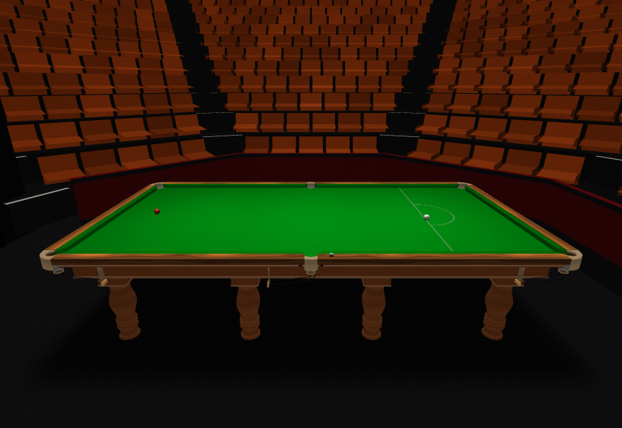
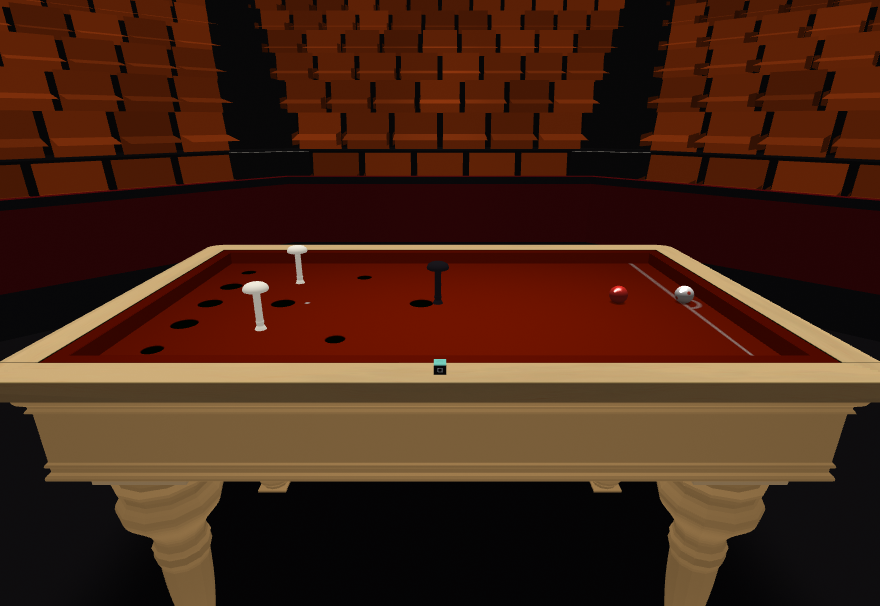
Bar billiards
The odd one out in every way. Four unbroken cushions and no pockets on the rails at all — instead there are nine holes bored through the bed, worth 10 to 200, and three wooden skittles standing among them. Eight balls: one red and seven whites, all the same size. There is no cue ball to scratch. Every white on the table is one, you strike whichever the shot wants, and a white down a hole is a score.
The red scores double, so the red in the 200 is 400.
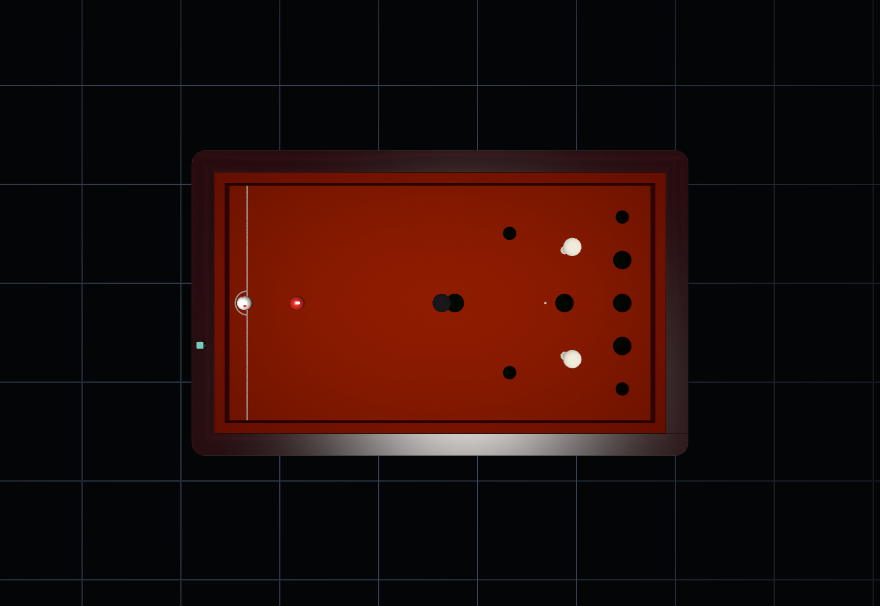
Where the holes and skittles are
The four holes nearest you are a diamond: the 200 at the front of it with the black skittle standing right in front of that, the two 50s at its sides, and the 100 at its back between the two white skittles. Across the far end is a row of five: 30-20-10-20-30.
Every stroke is played from the D at the near end, so you are always shooting away from the 200. Reaching it means bringing a ball back down the table off a cushion or off another ball, and past a skittle you must not knock over. The easy scoring is the row of five at the far end.
The 200, the 100 and the 10 all sit on the centre line, so a ball sent straight up the middle drops into the first of them it reaches — which is why the 100 and the 10 have to be played on an angle.
A ball has to be rolled in, not driven. Rolled in gently it drops; hit hard it skips the far lip and carries on up the table. The holes are real holes with the cloth turned over the edge and a shaft below, so this is the same free fall a real board gives you.
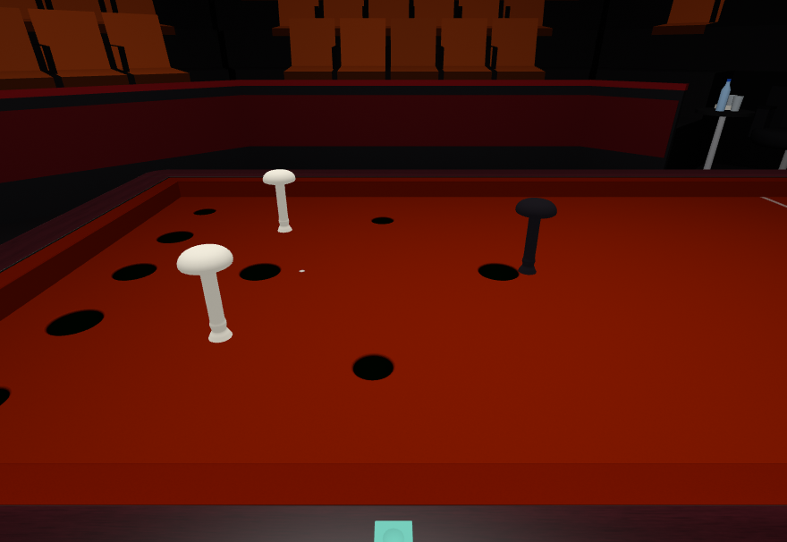
| Playing it | |
|---|---|
| Where you play from | The D at the base, every stroke — a half-disc of 40 mm radius round the break spot. The opening stroke is played from the spot itself, and the last-ball stroke from the middle of the D. |
| Which ball you get | One out of the trough while the rack still holds one. When the rack is empty you take the ball on the table furthest from the top cushion. |
| Your break | Runs on as long as you keep potting. A stroke that pots nothing ends it, and so does any foul. |
| Fouls cost your break, not points | Knocking over a white skittle; hitting nothing; sending a ball off the table or back over the baulk lines; and potting from the break position four times running (you get a "LEAVE ONE UP" warning after the third). |
| The black skittle | Knock it over and you lose your entire score. If a white went over as well, whichever fell first decides which penalty applies. |
| The end | A 17-minute clock, not a rack running out — a coin buys fifteen to twenty minutes on a real one. When it expires the bar drops: potted balls stop coming back out of the trough and play carries on until the balls are swallowed. |
| The last ball | With one ball left, the two white skittles are moved into the 50 holes and the stroke is played from the middle of the D. It only counts if the ball goes into the 100 or the 200 off one side cushion, and touching a white skittle voids it. Players take turns until it goes down — or the black falls. |
Bumper pool
A small table with no pockets on the rails. There are two cups sunk in the cloth, one at each end on the centre line, and twelve bumpers — rubber-collared posts standing at cushion height — eight of them in a cross across the middle and two guarding each cup.
Five red and five white, and no cue ball. The reds are one player's and the whites are the other's; you strike your own balls, and the one you are pointing at is the one you will play. Your five start at the far end from the cup you are shooting into, so the opening stroke is a bank off a side cushion and not a roll down the table.
One ball of each five is marked, and it has to go down first. Until it does, another of your balls dropping in your cup counts for nothing and comes straight back out onto its spot.
Your own ball in your own cup scores, and you carry on. Your own ball in your opponent's cup is a forfeit: they lift two of theirs and count them, taken at the start of their turn. Put one of their balls down their cup and it counts for them. First to get all five down takes it.
The bumpers turn a ball the way a cushion does — they are rigid posts with a rubber collar, and a ball comes off one with rather less pace than it went in. Most of the table is played around them rather than through them, and the computer plays it the same way: it looks for a line to its cup, and when the posts have taken every straight one away it banks.
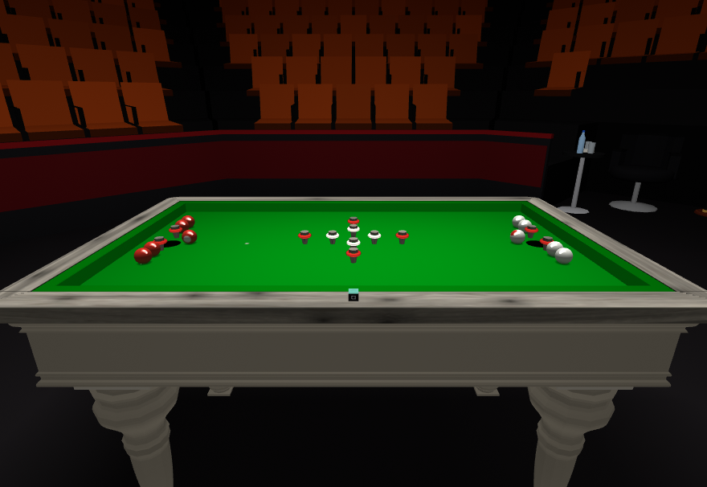
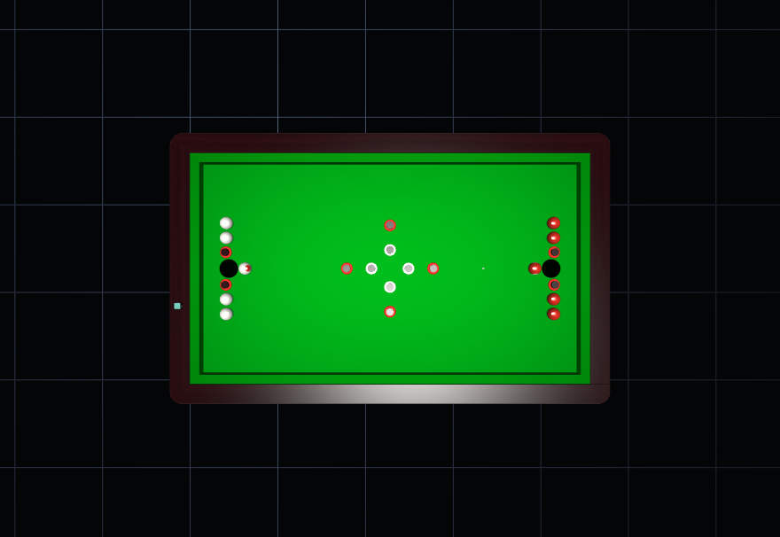
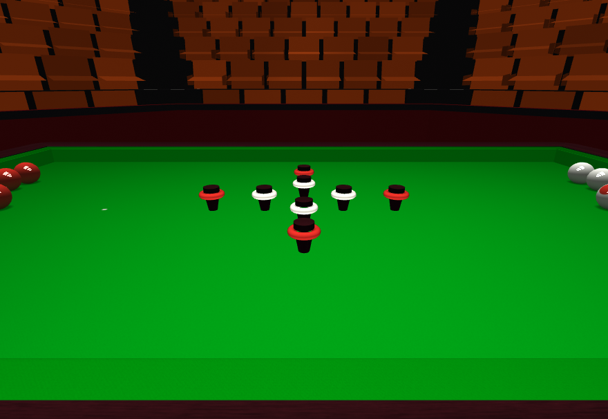
Sinuca Brasileira
Brazil's snooker, on the mesão: the federation's table, with leather pocket plates, nets and collectors. There is one red and the six colours, worth 1 to 7, and the lowest ball on the table is the ball on.
The break is from the D and must play the red. If it goes in, or you foul, break again.
A visit. Start on the ball on, or on any other ball — but any other ball has to go in, or it costs you 7. Pot the ball on and it stays down; then any ball is free to try, and potting that lets you try one more, at the same risk of 7. Every ball except the ball on, potted in its turn, goes back on its spot.
Every foul is 7 to your opponent, who can play on or make you play again; the same choice follows a colour you tried and missed.
The end. The frame is over when the 7 goes in, when the 6 goes in with a lead of more than 7, or when a player is too far behind to catch up once the 5 or higher is on. Level after the 7, the 7 alone is played again.
The card's RULES row also offers SIX-RED SNOOKER on the same table: snooker's own rules, on the mesão.
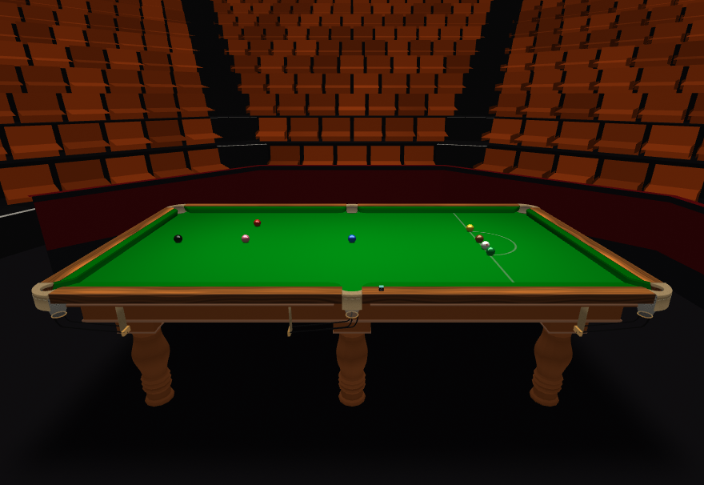
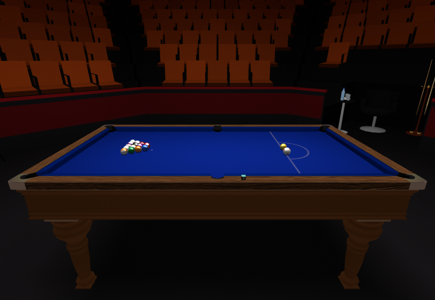
Mesinha
Brazil's bar table, beside SINUCA. The balls are 50 mm with a bigger 54 mm white; the corner pockets are cut to the federation's shape, the middles nearly square, and the cups are the bar table's 64 and 69 mm. The TABLE panel has it in three sizes, sold by their outside measurements: 2.20 × 1.20, 2.20 × 1.30 and 1.90 × 1.20 m.
The break is from anywhere behind the line across the D, and the first ball potted on it decides who has which group. After an in-off the white goes in the D. Hit one of your own balls first; pot one of yours and you play on; pot one of theirs and it is a foul, and the ball stays down for them.
A foul costs balls, not points. Balls come off the table, so somebody has fewer left to pot. The game is chosen on the card's RULES row:
| Game | Groups | A foul | To win |
|---|---|---|---|
| Par ou ímpar | Odd (3–15) against even (2–14); the 1 is the money ball, on its own mark | Takes your opponent's lowest ball off; hitting one of theirs first takes two | Clear your group, then the 1. The 1 too soon loses |
| Par ou ímpar, 1 ball a foul | The same | Always one of your opponent's balls | The same |
| Par e ímpar (CBBS) | Fourteen balls, 2–15, odd against even | Takes your opponent's lowest ball off; they play on or make you play again | Pot the last of your group, or be on your last ball when they foul |
| Mata-mata | 1–7 against 9–15; no 8 | Your opponent takes one of their own balls off, then plays on or makes you play again | Pot the last of your group |
| Bola 8 | Solids against stripes | As mata-mata | Clear your group, then the 8. The 8 too soon, or off the table, loses |
Taking a ball off. At mata-mata and bola 8, when your opponent fouls you choose which of your own balls comes off: look or point at it and pull the trigger, as at free pyramid. The computer takes off the ball it would find hardest to pot.
Choosing a group. At par e ímpar, a break that pots nothing, or goes in-off, hands the other player the choice of odd or even.
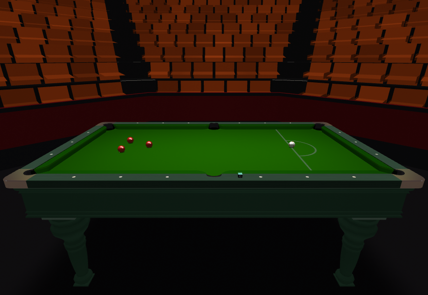
Billiards golf
Eighteen holes on the pub table, off the old Billiard & Golf scoreboard. Each hole is a fixed arrangement of two, three or four reds inside the rack triangle, with a par of one more than the number of balls. Strokes are the score and fewer is better.
There are no fouls at all. No ball you must hit, no cushion requirement, no turn to lose. Missing everything simply costs you a stroke. Potting the cue ball costs one extra — so that stroke costs two — and the white goes back to the middle of the baulk line with the reds left exactly where they lie. Every other stroke is played from where the ball is.
The scoreboard carries your card as you play. Each player's holes so far, their total, and how they stand against the par of the holes they have played — the number a golfer actually wants, without opening anything.
A hole ends when the last red goes down, or at eight strokes, whichever comes first. The board tells you where you are in golfer's language: "HOLE 4 — 2 FOR PAR", then "THIS FOR PAR", then "THIS FOR BOGEY".
Two players play the same hole from identical racks. The lower score takes the honour and leads off the next hole; a tie leaves the honour where it was. Low total wins the round. The RULES row chooses eighteen holes, the front nine (par 38) or the back nine (par 35).
Or play it as matchplay, which is the same holes scored as a different game. The RULES row has all three rounds a second time — MATCHPLAY 18, MATCHPLAY FRONT 9 and MATCHPLAY BACK 9 — and in those, each hole is won, lost or halved on its own and the totals are thrown away. The board stops talking about par and says where the match is: ALL SQUARE, or who is how many holes up.
And you pick up a hole you cannot tie. Playing second at a hole, once you have taken as many strokes as your opponent needed and the reds are not gone, nothing you do can halve it — so the visit ends there rather than making you play out a hole that is already lost. The card shows a dash where the score would have been, which is what a paper matchplay card carries, and the hole counts as lost exactly as if you had played it out.
It changes what a bad hole costs. In strokeplay a fourteen follows you round for the rest of the round; in matchplay it loses that hole and nothing else, and you can be all square on the next tee having been beaten by nine strokes on the last one. It also ends when it is decided rather than when the holes run out — more holes up than there are holes left and the match is over, which the board calls in golfer's shorthand: 3 AND 2.
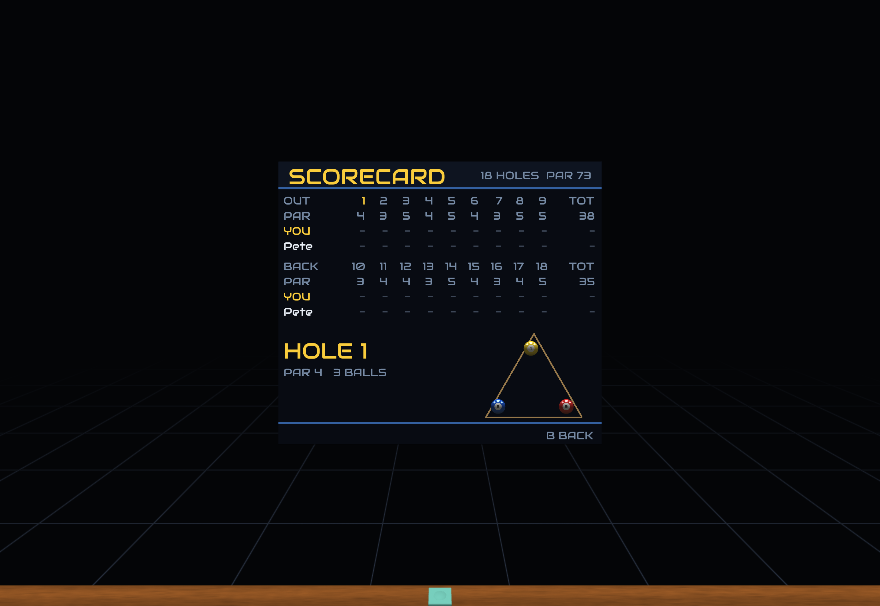
Paul
There is no rack. The whole snooker set — fifteen reds, six colours and the white — goes onto the cloth at random, differently every game, so there is no opening to learn and nothing to break. The white lies wherever it landed.
The break hits nothing. The opening stroke must touch no ball and no cushion. Touch either, or pot anything, and it is a foul worth two shots to your opponent.
Then alternate visits, and pot whatever you can reach — there is no ball on and no order. A red is one, a colour is two, the black is four, and everything potted stays down: nothing is ever spotted. A miss is not a foul; it simply ends your visit. An in-off is a foul, worth two shots to your opponent, and the ball it potted scores nothing. Two shots in hand are spent by potting, and after a scratch the white goes in the D, which is the only thing the D is for in this game.
You win by leading by more than is left. Twenty-nine points go on the table at the start, and the frame ends the moment one player is further ahead than the remaining balls can make up. If the table empties with the scores level, the black goes back on its spot and you play for it.
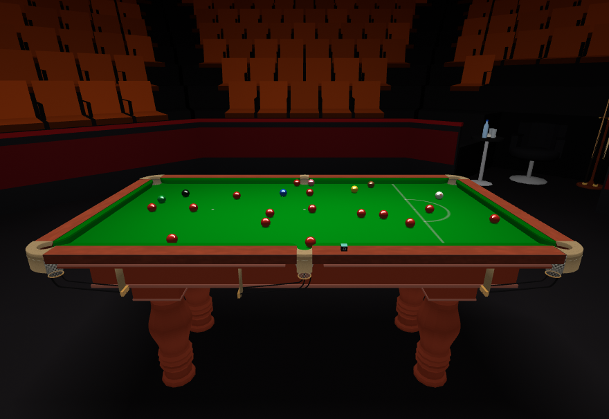
Carom — five games and no pockets at all
A new table with nowhere for anything to fall: four plain cushions all the way round. Nothing is ever potted, and every point is a cannon — your cue ball touching both the other balls in one stroke. You and your opponent each have a cue ball of your own, with a red between you, and the cloth is fast and the cushions the liveliest in the game, because the game is played off them.
Carom is one card on the game row; which of its five games you play is the RULES row, exactly as Killer sits on the 8-ball games. They differ in what the cannon must do on the way:
| STRAIGHT RAIL | A plain cannon scores. First to 30. |
| 1-CUSHION | One cushion before the second ball. The step between straight rail and the professional games, and the one UMB discipline CueVR was missing. First to 20. |
| 2-CUSHION | The cue ball must touch two cushions before it reaches the second ball. First to 15. |
| 3-CUSHION | Three cushions before the second ball — the professional game, and very hard. First to 10. |
| FOUR-BALL | The Korean game, with a second red on the table: a point is a cannon on both reds, and your opponent's cue ball is the ball you must not touch. First to 15. |
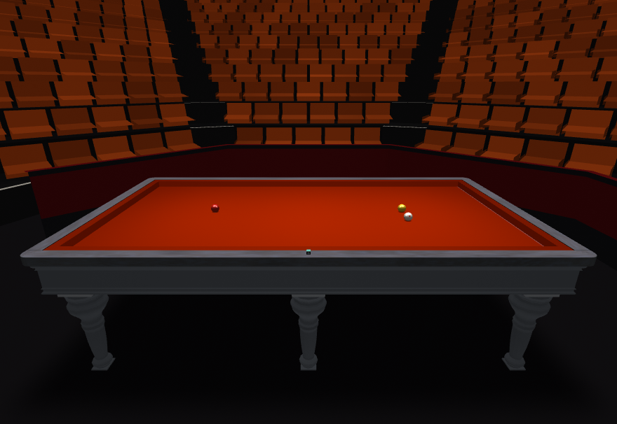
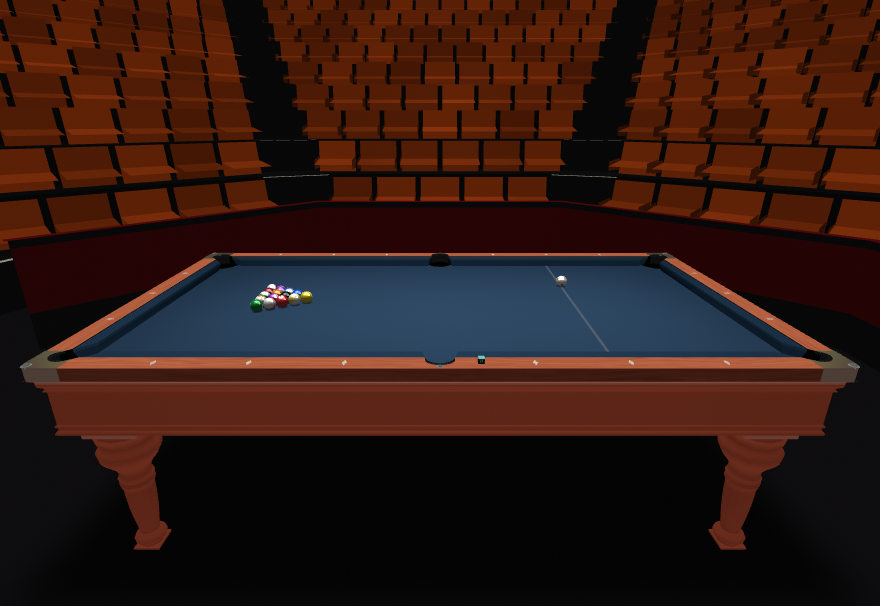
One pocket
The most tactical game on a pool table, and unlike anything else here. You own one of the two far corner pockets and your opponent owns the other. A ball is worth something to whoever owns the hole it went down and to nobody else, and eight of the fifteen wins it.
The breaker chooses, after the break. Not before — you pick your pocket once you have seen what the break left, which is how the game is played and half of what makes the opening stroke worth thinking about. The board asks you and the table waits; the other corner is then your opponent's. Against the computer it chooses for itself, and quickly.
Which pocket is yours is lit on the table — yours steady green, your opponent's steady red, both lit for the whole frame. The other four pockets stay dark, which is exactly their status: a ball down one of those is spotted and your visit is over.
A ball in your opponent's pocket scores for them, and there is no way to refuse it. A ball down is down.
A foul costs a ball, not just the turn. One of your scored balls comes back out on to the table, and if you have none yet you owe one, taken from the first ball you do score. That is what makes the game the famous crawl it is: two players nudging balls a millimetre at a time, because a foul is more expensive than a missed chance.
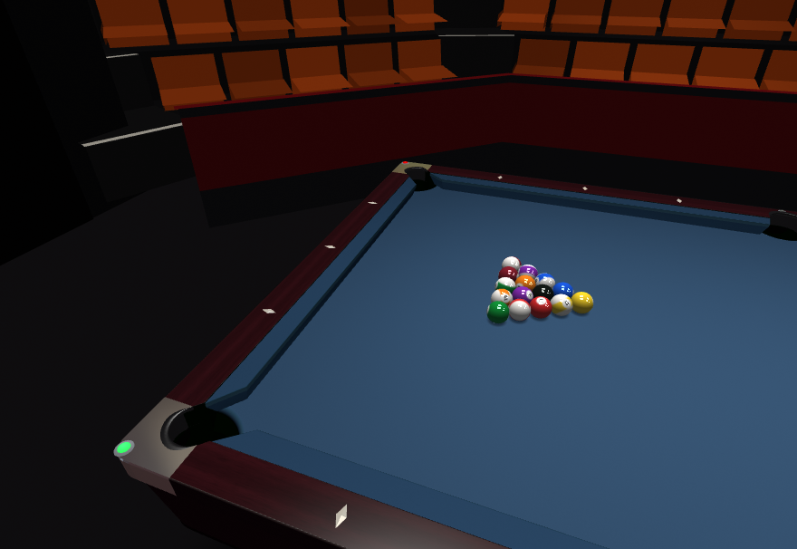
Rotation, and the games on its board
The oldest of the rotation family and the reason the family has that name. The lowest ball on the table is always the one you must hit first, and a ball is worth its own number. The numbers come to 120, so 61 wins — and the frame can be over with balls still up, which is the whole shape of it. The 15 alone is a quarter of what you need, so a player who took the low balls cheaply can still lose to one who took the high ones.
The rack is rotation's own: the 1 at the apex nearest you, the 2 and 3 in the far corners, the 15 buried in the middle. The ball you are obliged to hit is the closest one, the next two lowest are as far away as the table allows, and the biggest score cannot be had cheaply.
| ROTATION 61 | The classic game. A foul puts the incoming player behind the head string, which is a real penalty: you may not shoot at anything in front of the line, so a pack at the far end has to be reached the long way. |
| FILIPINO ROTATION | The same board, two rules changed, and they are the two that decide how it feels. A foul gives ball in hand anywhere, which hands the table over rather than making you travel — and three fouls in a row loses the frame, so a player who cannot reach the ball on cannot simply keep handing it back. |
| 15-BALL | Rotation without the rotation: the same scoring and the same 61, and nobody telling you what to hit. You pick which of the big balls to go after rather than working your way up to them. Its rack is the mirror, with the 15 at the apex. |
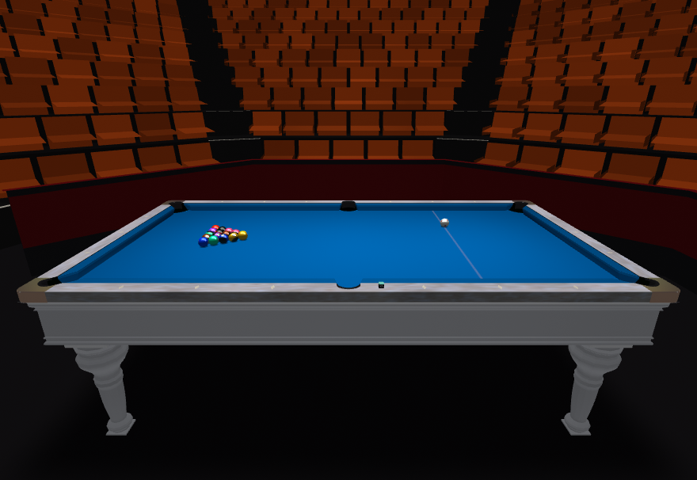
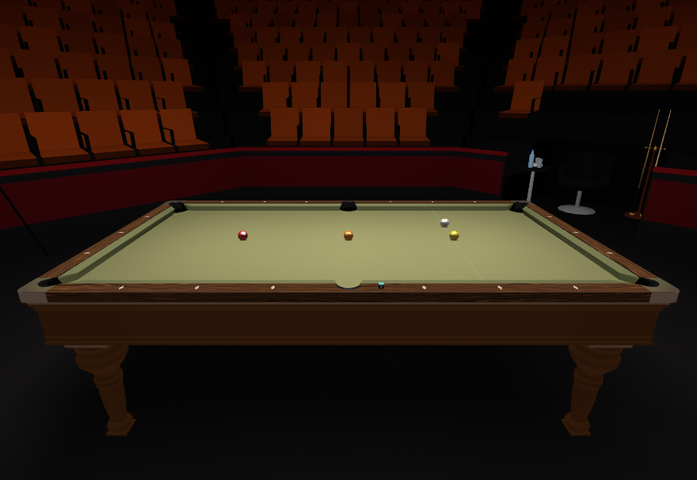
Cowboy pool
Only the 1, the 3 and the 5 are on the table, spread down the bed on the foot, centre and head spots, and there are a hundred and one points to be had off them three ways at once: pocketing, cannons and in-offs.
| To 90 | Everything scores. A ball pocketed is worth its number, a cannon off two balls is one, and an in-off is one. |
| 91 to 100 | Cannons only. Pocketing scores nothing from here. |
| The 101st | A cannon with the 1 struck first, and nothing else will do. |
And you cannot overshoot. A stroke worth more than the phase has left scores nothing and your visit is over. The ceiling before ninety is ninety, not 101, so a player on 88 cannot simply take the 5 — they need the 1, or a cannon, or an in-off.
The balls always come back to their spots.
Bank pool, Honolulu and speed pool
Three more games on the same bed, each built on refusing you one ordinary thing.
| BANK POOL | Call the ball and the pocket, and bank it in. Only
the called ball, banked into the called pocket, scores — one ball a stroke.
Anything else that drops goes back on the table, and that is not a foul, so if your
called ball went in you keep the table. The break is not called, and what it banks in
counts.
What a bank is. The ball must come off a rail that does not run into the pocket it drops in. A rail is the cushion between two pockets, jaws included, so off the far side of the table is a bank, and so is off the jaw of a different pocket. A ball that runs along one of the pocket's own rails, or clips that pocket's jaw on the way in, has not been banked. First to 8, and a foul costs a ball as it does at one pocket. |
| HONOLULU | A straight-in pot scores nothing. The ball has to arrive the hard way — off a bank, off a kick (the cue ball finding a cushion before it reaches a ball), or through another ball as a combination or carom. A bank is judged as it is at bank pool: off a rail that does not run into the pocket. The one shot every other game on this table is built around is the only one this game does not have. A straight pot is not a foul: it goes back on the table, and if you scored one properly on the same stroke you keep the table. First to 8. |
| SPEED POOL | Not a frame at all. You each clear a full rack and the clock is the score — lowest time wins. There is no turn to take from anybody and nothing to defend: any ball, any pocket, as fast as you can get to the next one. Potting the cue ball is not a foul — it comes back in your hand and the clock keeps running, which costs you more than a lost turn would. |
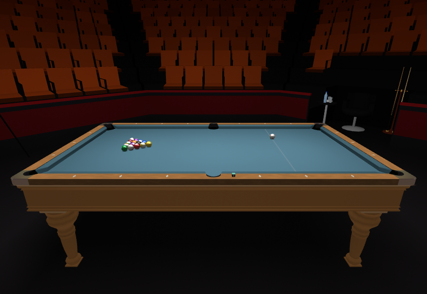
Bowlliards
Pool kept on a ten-pin bowling card, and the only game here besides golf that you play against a card rather than against the person opposite. Ten balls, ten frames, and a maximum of 300.
A frame is two innings to clear the rack. Clear all ten in the first and it is a strike; clear them across both and it is a spare; anything else scores the balls you potted. The break is free — nothing on it counts, everything goes back up, and a scratch costs nothing — and then you call ball and pocket on every stroke.
The scoring is a real bowling card, which means a frame cannot be totalled when you finish it. A strike is worth ten and the next two innings; a spare ten and the next one. So the box stays blank until the balls that score it have been thrown, exactly as on paper, and the tenth frame earns two extra innings for a strike and one for a spare.
The board shows the five frames you are in, marked the way a bowler marks them: X a strike, / a spare, - a miss. MENU, then SCORECARD, for all ten.
There is nothing to play safe for — you are clearing your own rack and the table changes hands when your inning ends, not before — so the machine never plays safe at it either. It takes every pot however thin and chooses between them by where the cue ball finishes, which is what clearing ten actually asks of you.
The RULES row offers CANADIAN house rules as well as the standard game. Under those you do not call anything — no ball, no pocket, pot what you can. The break is a scoring stroke: whatever goes down on it stays down and counts towards your first inning. You play the white from wherever it finishes rather than taking it in hand, unless you potted it — a scratch on the break costs you the position and nothing else. And failing to reach a cushion is still a foul, but the incoming player takes the table as it lies instead of with the ball in hand.
Try it with the TENPIN ball set: ivory pins with the two red rings round the neck, numbered one to ten as pins are, and a swirled bowling ball for the cue ball.
Cribbage pool
The numbers on the balls are worth nothing on their own. What scores is a cribbage — two balls totalling fifteen, potted one after the other inside a single inning. There are exactly seven of them in a rack: 1+14, 2+13, 3+12, 4+11, 5+10, 6+9 and 7+8. Five cribbages takes the game, and the rack is not played out once somebody has them.
In succession is the whole game. Pot the 4 and you are on a cribbage: the next stroke must pot the 11, there is no option to leave it, and failing is a foul that spots the unpaired ball and ends your inning. Pot two openers on one stroke and you owe both — take them in whichever order you like, but keep going until the list is empty.
The 15 pairs with nothing and can start no cribbage. Potted early it is spotted and that is not a foul; once every other ball is down it becomes a cribbage on its own, and it decides a game that is level.
The board carries all seven fifteens. A pair struck through has gone, a pair lit is open, and the ball you MUST POT is named beside them — which matters, because while you owe one it is the only legal shot on the table.
The balls each game is played with
Every game uses the balls it is really played with, at the official size and weight. English pool is the odd one out: its cue ball is smaller and lighter than the object balls, a convention that comes from coin-operated tables needing to tell the white apart to return it. You will feel it — a light cue ball checks back off a full contact instead of stunning dead, and it throws the object ball further when you use sidespin. Billiards golf is played on that same pub table and inherits it.
| Game | Object balls | Cue ball | Specification |
|---|---|---|---|
| Snooker, 12ft and 10-red | 52.5 mm · 142 g | 52.5 mm · 142 g | WPBSA |
| Snooker, 6-red (7ft) | 50.8 mm · 116 g | 50.8 mm · 116 g | A compact set to suit the small table. 6-red is played full-size in competition, so there is no official spec for it on a 7ft bed. |
| UK 8-ball | 50.8 mm · 116 g | 47.6 mm · 94 g | WEPF: 2.000″ ±0.005″, 116 g ±2 g, with the traditional 1⅞″ cue ball |
| US 8-ball, 9-ball and 10-ball | 57.15 mm · 170 g | 57.15 mm · 170 g | WPA: 2¼″ ±0.005″, 160–170 g |
| Chinese 8-ball | 57.15 mm · 170 g | 57.15 mm · 170 g | WPA balls on a 10ft snooker-built table |
| Straight pool | 57.15 mm · 170 g | 57.15 mm · 170 g | WPA, on the 9ft American bed |
| Billiards golf | 50.8 mm · 116 g | 47.6 mm · 94 g | The UK 7ft table's own set, small white included |
| English billiards | 52.5 mm · 142 g | 52.5 mm · 142 g | Snooker balls: a red and two whites |
| Russian pyramid, 12ft | 67 mm · 255 g | 67 mm · 255 g | The federation's current tournament ball. The largest ball in the game, on the smallest pockets. |
| Russian pyramid, 7ft | 57.15 mm · 158 g | 57.15 mm · 158 g | 2¼″, the smallest pairing the federation lists |
| Sinuca Brasileira | 54 mm · 155 g | 54 mm · 155 g | The Brazilian federation's ball, all seven the same size |
| Mesinha | 50 mm · 120 g | 54 mm · 151 g | The bar table's set: a white bigger and heavier than the rest |
| Paul | 42 mm · 110 g | 42 mm · 110 g | A small home set: a full snooker set of twenty-two balls, at the size a 6 ft table comes with. The smallest balls in the game, on 54 mm pockets. |
| Bar billiards | 47.6 mm · 120 g | All eight balls are the same: one red and seven whites, and any white on the table can be struck. | |
| Carom | 61.5 mm · 210 g | 61.5 mm · 210 g | Two cue balls — one each — and a red. Four-Ball adds a second red. |
Match length is set on the main menu: one frame, or best of 3, 5, 7, 9 or 11. The break alternates between players and the score carries through the match. A player who cannot catch up will concede rather than play it out.
Two games end on something other than a score: bar billiards ends when its clock runs out, and billiards golf ends when the round does.
Which table
Every game has more than one table to play it on, and the table you choose changes how the game plays — unlike the cloth and the woodwork under Table and room, which do not. It is the TABLE panel, first on the strip along the foot of the main menu.
It holds four things: the standard table cut to one of three specifications, the same game on a bigger or smaller bed, four beds that are not really tables at all, and any table you have built and kept. Click it and you get a gallery of photographed cards, one per table, your kept workshop tables included — the same arrangement as the game picker, and the arrows in the corner turn the page. Your choice is remembered per game, so tightening snooker does not tighten your pool table.
A bigger or smaller bed
The same game on a different size of table: 6 ft, 7 ft, 9 ft, 10 ft and 12 ft, offered where the game is really played on them. Only the cloth changes size. The balls stay the same — a 6 ft pub table is played with the same two-inch balls as a 7 ft one — and so do the pockets, which are cut to the same templates. A smaller bed is therefore an easier table, not a scaled-down one: the same ball has the same pocket to aim at over a shorter distance.
The baulk line, the D and the spots are laid out again to fit, so every mark is where it belongs on that size of table rather than where it was on the one it came from.
Pro, Tournament and Club
The same game on three different tables. Two things change between them: how much room the pockets give and how fast the cloth is.
| Table | PRO | TOURNAMENT | CLUB |
|---|---|---|---|
| Snooker 12 ft and 10-red, English billiards CORNER |
1.54 · 80.9 mm | 1.64 · 86.0 mm | 1.79 · 94.0 mm |
| MIDDLE | 1.65 · 86.5 mm | 1.70 · 89.5 mm | 1.90 · 100.0 mm |
| UK 8-ball 7 ft, 6-red snooker, billiards golf CORNER |
1.60 · 81.3 mm | 1.65 · 84.0 mm | 1.75 · 89.0 mm |
| MIDDLE | 1.60 · 81.3 mm | 1.69 · 86.0 mm | 1.81 · 92.0 mm |
| US 8-ball, 9-ball, 10-ball, straight pool CORNER |
1.78 · 101.6 mm | 2.00 · 114.3 mm | 2.06 · 117.5 mm |
| MIDDLE | 1.40 · 80.0 mm | 1.62 · 92.7 mm | 1.73 · 99.0 mm |
| Chinese 8-ball 10 ft CORNER |
1.50 · 85.7 mm | 1.54 · 88.0 mm | 1.61 · 92.0 mm |
| MIDDLE | 1.50 · 85.7 mm | 1.58 · 90.0 mm | 1.66 · 95.0 mm |
| Cloth | Fast | Normal | Slow, and the cushions are 2% deader with it |
A few games have no ladder and say ONE TABLE, AS BUILT: both Russian pyramids, whose pockets are meant to be barely wider than the ball; bar billiards, which has no rail pockets to cut; Paul, which is one particular table in somebody's house; and carom, whose table has no pockets at all.
Every card in the table picker gives its pockets in millimetres: the corners and then the middles, measured at the narrowest point between the jaws.
Four beds that are not tables
On the same card, after the three specs: L-SHAPEDHEXAGONOCTAGONROUND
These are the workshop's shapes offered as ordinary choices, so you can play a real frame of snooker round a corner without building anything. Every game takes them except bar billiards, whose scoring is bored through the bed, English billiards, and carom.
Your own tables
Build one in the workshop, choose which games it is for, and press KEEP THIS TABLE. It appears on the TABLE card beside the ready-made ones, for those games only, under a name made from what it is — L 84MM, HEX 76MM, ROUND 112MM. There are twelve slots. FORGET IT throws one away.
Rules and the referee
The rules are enforced for you, and called out loud. You do not have to keep score or remember what is on.
The top line says which game this is, and which rule set it is being played under — UK 8-BALL and BLACKBALL, SNOOKER and MISS: PRO, BILLIARDS GOLF and 18 HOLES - MATCHPLAY. It used to say POOL, which is true of thirty of the thirty-two games, and the rule set appeared nowhere once you had left the menu.
At snooker that includes reds and colours in the right order, colours going back on their spots, free balls after a foul, called misses, and the final clearance from yellow to black. At the pool games it includes your group, the two-shot carry at UK 8-ball, and the push-out at 9-ball. Elsewhere it includes cannons and in-offs at English billiards, the called ball at straight pool, the cushions counted before the second ball at carom, and the skittles and the clock at bar billiards.
The break has to do something
Every rule book legislates for the player who taps the pack and leaves it standing, and they do not agree on how. CueVR asks what each game's own book asks:
| Game | A legal break | If you fail it |
|---|---|---|
| UK 8-ball — pub | Nothing is asked. | — |
| INTERNATIONAL | Pot a ball, or four object balls to a cushion. | Re-rack, opponent breaks. |
| ULTIMATE POOL | Three points: one a ball potted, one a ball left wholly past the middle-pocket line. | Re-rack. |
| BLACKBALL | Pot a ball, or two object balls across the line between the middle pockets. No cushion test at all. | Foul — your opponent gets a free shot. |
| US 8-ball, Chinese 8-ball | Pot a ball, or four object balls to a cushion. | Not a foul: re-rack and your opponent breaks. |
| 9-ball, 10-ball | Hit the 1 first, and pot a ball or drive four object balls to a cushion. | Foul — ball in hand. |
| Straight pool | Pot the called ball, or drive two object balls and the cue ball to a cushion. Both. | Two points off, not the usual one. |
| Rotation, Filipino, 15-ball | Pot a ball, or four object balls to a cushion. | Foul. |
| Bank pool | Pot a ball, or four object balls to a cushion. | You owe a ball. |
| One pocket | Pot a ball, or send one object ball or the cue ball to a cushion. | You owe a ball. |
The rules of the game you are playing
The referee is exact and it is silent: it will foul you for something you did not know was a foul, and until now the only place to look it up was this page, on a screen you are not wearing. So every game carries its own short rule book. Press MENU and choose RULES OF THIS GAME, and there it is — what you are trying to do, how you score, what a foul costs and how the frame ends. Snooker, one pocket and bank pool run past a page: hold the trigger on it and drag to scroll. The thumbstick still moves the table.
It is the rules of the frame in front of you, not of the family it belongs to. The variant is named under the title and only its rules are printed: choose PUB and it tells you about two shots, choose BLACKBALL and it tells you about the free shot, the jump foul and the sixty-second clock. It never lists four rule sets and leaves you to work out which one you are on.
Hold X at any point and the board is replaced by a live photograph of the table from above, for as long as you hold it.
When your opponent fouls
You are asked what you want to do. You can play on from where the balls have finished, or make your opponent play the shot again. If a miss was called and the table can be put back as it was, that is offered too. The referee announces what you chose.
Foul and a miss
In the snooker games, failing to hit the ball on is always a foul — but whether it is also called a miss depends on the effort you made, exactly as a real referee judges it.
Where to set it. The RULES row on the snooker games. It has three strictnesses, and it can be turned off, in which case there is no judgement at all and every failure to hit the ball on is a miss, as it always was before the rule existed.
| MISS: AMATEUR | A genuine try is enough — within about three ball widths, with most of the pace to get there. |
| MISS: CLUB | The default. Within a ball and a half, at nearly full pace. |
| MISS: PRO | As on television: almost every failure is called. Within about a third of a ball, and the cue ball must have had the pace to pass the ball on. |
How the referee decides. He judges the stroke against the ball you came nearest to, not against every legal ball on the table — a stroke aimed at one red is not marked down for the fourteen it ignored. Two things then settle it:
| How close you came | Measured in ball widths — roughly three balls at AMATEUR, a ball and a half at CLUB, a third of a ball at PRO. |
| Whether it was a real attempt | How far the cue ball travelled against how far it had to go. A dribble that stops short is a miss however well aimed it was. |
Two allowances are made on top of that, because a referee makes them. You get three times the room when you were snookered — an escape off three cushions that finishes a ball's width away is a good attempt by anybody's reckoning — and more room the longer the shot, so nobody is called for drift on a twelve-foot roll that the same drift on a tap from a foot away would be called for. Three called misses in a row lose the frame — but only ones you were not snookered for: an attempt the referee accepted, or a miss played from a snooker, does not count towards the three, and a single accepted attempt clears the tally.
The same row has two more stops, SHOOTOUT and THE 900. They replace the miss rule rather than sitting beside it: each is a different frame altogether, played against a clock — see The games.
Calling a pocket
To call a shot is to say, before you play it, which ball you are potting and where it is going. Four games can ask for it.
Where you set it is the RULES row on the main menu, and each game words it its own way:
| Straight pool | CALL THE BALL, the default, wants the ball only, and it may go down any pocket. CALL BALL AND POCKET wants both — nothing counts unless it was declared first, and that is the real game. |
| 10-ball | CALL SHOT (WPA). Every stroke is called; the break is not. |
| US 8-ball | CALL THE BLACK asks only for the last one, which is how most people play. CALL SHOT (WPA) asks for every stroke, which is how the rule book has it. |
| Chinese 8-ball | The same two, with CALL SHOT (CBSA) for the tournament reading. |
What the lamps mean. There is one behind each pocket:
| Flashing green | The game's own call. It has picked this pocket for you; play the shot and it stands. |
| Solid green | A pocket you declared. |
| Red | A call is owed on this stroke, and this is not the pocket it is on. |
| Amber, filling up | The pocket you are looking at now, filling as the dwell runs. Let it fill and it is called. |
| Grey | Nothing needs calling this stroke. |
The called ball gets a chalk ring on the cloth as well, so one glance tells you both halves of what is booked. Nothing is ever called on the break, and the scoreboard says NO CALL NEEDED so you are not left wondering.
Overruling the game's choice — or making the call yourself when the shot is ambiguous — is the CALL A POCKET row on CONTROLS, and there are three ways to do it:
| LOOK + TRIGGER | Hold the trigger on your free hand, look at a ball or a pocket, and release to call it. |
| LOOK, STOOD UP | Look and hold, no trigger. It only listens while you are stood up off the shot, so looking around while you are down on the ball changes nothing. |
| POINT + TRIGGER | A laser from your free hand — or from the cue itself, if you have a real cue attached. |
The computer players call their pockets too, from the plan they actually made, and you see their call light up while their shot is still rolling.
Calling the break
At snooker, English billiards, Sinuca Brasileira, carom and straight pool the referee calls your break as you build it: the running total after each scoring shot.
Turning the referee off
Settings → Voice sets a female voice, a male voice, or no voice at all. The scoreboard stays either way.
When the match is over
The board gives way to a summary of what the two of you did: balls potted, longest run, pot percentage, fouls and how long you took over a shot, with the frames alongside. The longest run of the match is shown as the balls themselves, in the order they went down.
Opponents
Eight computer players. They differ in how straight they hit the ball, how much they think about where the cue ball finishes, how much risk they take, and how well they get out of trouble. The bars below are their actual settings.
Rookie Rick
Takes on everything and misses most of it. Hits the ball far too hard and has no idea where the cue ball will finish. Start here.
Steady Sue
Will not take on a pot she does not fancy, and plays safe instead. You will not get many free chances, but she will not punish you hard either.
Professor Pete
Plans properly and is good at breaking up awkward clusters, but he is not the straightest potter. He will build a break if you let him.
Hustler Hank
Fast and attacking. Hits everything with pace and takes on pots other players would leave alone. Streaky, and dangerous when it comes off.
Clara CueQueen
Accurate, balanced and hard to fault. The first opponent who will make you work for the frame rather than wait for a mistake.
Deadshot Dave
Pots nearly everything he looks at, from anywhere. He does not think much about the next shot, so his breaks tend to end by themselves.
Iron Nina
Very straight and very controlled. She plays position on every shot, breaks clusters open when she needs to, and will punish a loose safety.
The Machine
Aims perfectly and thinks about every shot for as long as it takes. It makes centuries at snooker regularly, with a best break of 134.
Records on the main menu keeps your results against each player, and your best breaks. They count on the standard table only — see Which table. Any of the three specs still counts, because a spec is the ready-made table cut to a published size; a different bed shape, a table you built, or an opponent's table online does not, and the page tells you which one it is declining.
Their own cues
At the table with you
At their shot they walk round the outside of the table to it, get down on it, and stay down a moment after the stroke. After a pot they step back with the cue held ready and carry it round to the next shot; after a miss or a safety they stand it upright again and go back to their place. In doubles, teams and Killer you see one computer player's cue at a time: the one at the table, or while you are playing, the one who plays next.
Settings → Opponents → THEIR CUES BETWEEN SHOTS turns this off: HIDDEN shows a computer player's cue only while it is down on the shot.
Doubles and Killer
After a foul, PLAY AGAIN puts the player who fouled back at the table. On a Killer game, step 3 VS has a PLAYERS row instead, from 2 to 8, and a pick for each player. The order of play is drawn, and the scoreboard shows everyone's lives.
How they play
They aim at the real opening the cushion noses leave rather than at a line through the middle of the pocket, and on a cut they err towards the far jaw, which is the safer side to be wrong on. Given ball in hand they work back from the shots the position offers, and they always leave themselves able to reach the ball on.
They play the newer games too. English billiards has its own planner, since a cannon is the commonest scoring stroke there and it pockets nothing, while an in-off scores here and fouls everywhere else. Bar billiards has one as well: it plays in-offs, plants, contacts at five thicknesses and one-cushion shots around a skittle, and it will not risk the black skittle.
They break off at snooker the way a snooker player does. Thin on the outside red with a touch of side and a little top, off the top cushion, back down between the pink and the blue and into baulk — on any of the three snooker table sizes. How close they get to it is their skill: the stronger players land it, and the weaker ones catch the red too thick or too thin and finish short of baulk, which is a break-off you can do something with.
Career
A player's career on one of four tours, from a club league to the pro tour. Up to twelve careers are kept at once.
Starting one
| Choice | What it does |
|---|---|
| TOUR | Snooker on a 12 ft table, UK Ultimate pool on a 7 ft table, US 9-ball or US Ultimate pool on a 9 ft table. |
| START IN | The level you join at: a club league, the county championships, the national amateur tour, the qualifying school or the pro tour. Win enough and you go up a level at the end of the season. |
| YOUR NAME, YOUR COUNTRY | How you appear in the draws and the rankings, with your country's flag. |
| MATCHES | BEST OF 1 for quick games, every match one frame. SHORT: best of 3 low down and best of 7 at most. FULL LENGTH: every event at its real length, up to the long matches of a world final. |
| REDS | Snooker only: 15, 10 or 6 reds. The break records follow the game, so a 6-red career counts 50+ breaks where a full-reds one counts centuries. |
The hub
PLAY NEXT MATCH puts it on the table. SIMULATE TO MY NEXT MATCH plays every other match up to your next one. When you have a match already started, the first button says CONTINUE MATCH and takes you back to it. When you have no events left in the season, it says FINISH THE SEASON: it plays the rest of the season out and opens the review.
When an event finishes
The players
Every player on a tour has their own name, nickname, country and cue, and plays at their own strength, which was measured in the game's own play. The cue they strike with is the one on their page. You will meet the same players again season after season.
The Atlantic Cup
On the US tours, Europe plays the Americas each season: singles, scotch doubles and five-a-side team matches. Where your side has you in a doubles or team match, the computer plays your team-mates.
Played to the end
A career match cannot be ended or racked again half-way through. There is no END MATCH or RE-RACK in a career. To stop, use PAUSE MATCH or SAVE AND LEAVE (see Saving and resuming) and come back to it. Career matches count towards your records, apart from doubles and team matches.
Where the events are played
Turn on Tour matches at the event's venue under Environment → Surroundings, and every tour and event match is played in its event's own room instead of yours. The leagues are in pubs and clubs, the county and national events in clubs and television studios, the pro tour in arenas and studios, and the majors in big arenas and theatres. The same event is always in the same room.
- The venue puts out its own table and balls for the match: championship cloth on tournament or mahogany timber at the pro snooker venues, a coin-op cabinet in a pub. Your own table comes back when the match ends.
- The trophy you are playing for is on show beside the table, on its stand.
- The World Championship snooker final is always played in the Arena.
- Your own room for this one match: pick it from the ROOM chips on the pause menu. Event venue on the same row takes you back.
With it off, which is how it starts, tour matches are played in whatever room you have chosen. Two things happen either way: the World final is in the Arena, and the venue's crowd is heard — see The crowd.
Events
Any event from the tours on its own, without a career: a pub league, a ranking event, a World Championship or the Atlantic Cup.
| Choice | What it does |
|---|---|
| FIELD | How strong the other players are, from a club league up to the pro tour. |
| YOU START | Where you are seeded, or unseeded. |
| MATCHES | BEST OF 1, SHORT or FULL LENGTH, as in a career. |
| REDS | Snooker only: 15, 10 or 6. |
| FIELD NUMBER, REROLL | REROLL draws a new field. The same number always gives the same event. |
An event match is played to the end in the same way as a career match: no END MATCH and no RE-RACK, and PAUSE MATCH to leave it.
Trophies
Every event has its own trophy, the same one every season, with its winners engraved on it. Win one and it stands on the table. A career keeps its titles on shelves in the room.
Winning a title
The trophies
The event's name is on the front plate. Down the sides and the back is a plate for each season, most recent first, with that season's winner. Your name goes on when you win it.
The trophy cabinet
| To | Do this |
|---|---|
| Take a trophy down | Squeeze a grip near it. Let go and it goes back on its shelf. |
| Move the shelves | MOVE THE CABINET, then push the stick to slide them across the floor. |
| Turn them | While moving them, squeeze the side trigger: the stick turns them. Squeeze again to go back to sliding. DONE keeps them there. |
Each career has its own cabinet. A stand-alone event's title is celebrated on the table, but only a career's titles go in its cabinet.
Saving and resuming
Every match is saved after every shot: against the computer, in a career and in an event. Close the game and carry on from the same shot.
| Button | Where | What it does |
|---|---|---|
| SAVE AND LEAVE | Pause, at the table | Keeps the match and goes to Home. |
| PAUSE MATCH | Home, with a match on | The same, from Home. |
| CONTINUE MATCH | Home | Back on the table with the saved match: the career's or event's own when step 3 is that career or event, otherwise the one saved last. |
| CONTINUE CAREER / CONTINUE EVENT | Home | The hub, so you can look at the standings first. Its CONTINUE MATCH carries on with the match. |
| SAVED MATCHES | Home | Every match kept, up to twenty, newest first. Continue any of them, or delete one you have finished with. |
A resumed match comes back on the ball set it was played with, because sets weigh differently. A new match is racked on your own choice.
Practice and challenges
Two ways to play without an opponent.
Free practice gives you the table on your own with no rules and no scoring. Put the balls wherever you like and hit them.
The target
A chalk bullseye on the cloth to play the cue ball to: a 50 in the middle, then 20 and 10 rings, 26 cm across. Tap MENU in practice or a challenge and choose Target on; it is chalked where you last left it. Move the target puts it in your free hand, the same as a ball in hand: take it anywhere on the table and pull the trigger to put it down. Target off rubs it out.
When the cue ball comes to rest inside the target, the ring it stopped in — the 50, the 20 or the 10 — lights up. It goes out as soon as the cue ball moves again or you move the target.
A challenge can have its own target. In the layout editor, PUT THE TARGET ON, then pull the trigger near it to pick it up and carry it like a ball. It is saved with the challenge and chalked on the table whenever the challenge is played; your practice target comes back when the challenge ends.
Challenges set you a goal on a fixed layout: a position to play from, a ball to pot, a score to reach or a table to clear. Each one is judged over a single visit, so a miss ends the attempt and you start again.
VS → Challenge on the main menu opens them as a page of cards; in free practice they are a chip on the pause menu. Each card is a picture of the layout with its name, what it asks and your best result underneath. Point at one and pull the trigger to open it. The first two cards are always there: THE TIMED SIX, six reds against the clock, and MAKE ONE. You can keep thirty-two challenges of your own.
A challenge's page
| Row | What it does |
|---|---|
| NAME | Opens a keyboard. Type a name and press KEEP IT; SUGGEST starts you from a description of what it asks. A challenge with no name is described that way on its card, such as POT THE 1 TO THE 4 - US 8-BALL. |
| WHAT IT ASKS | JUST THE POSITION (play on from here, nothing is judged), POT A BALL, SCORE or CLEAR THE TABLE. |
| No clock / Against the clock | Whether it is timed. |
| The target | If the challenge has a target, it can also ask the cue ball to finish inside the 50, the 20 or the 10. |
| WHICH BALLS | For POT A BALL, the balls to pot. Pick more than one and all of them have to go down in the visit. |
| SHARE | Gives a six-letter code for it. See Sharing and the gallery. |
| DELETE | Throws it away. Press it twice. |
Making your own
MAKE ONE, or Workshop → Challenge, opens the layout editor with the balls as they are on the table. So the quickest way to make a challenge is to set a position up in practice, or stop at one you keep getting wrong, and press MAKE ONE. A table with no balls on it starts from a full rack.
From a code
FROM A CODE, on the MAKE ONE card, takes a challenge somebody has shared: type the six letters and press GET THE CHALLENGE. It joins your cards and opens on its page. Or pick one in the gallery, where players put the challenges they want others to try.
Leaving one and coming back
Go to Home in the middle of a challenge and it waits for you. Home names it and offers CONTINUE, which puts you back at the table where you left it, and END CHALLENGE, which takes you to the challenge list. Tapping MENU goes back to the table too.
A match position
Set out a position by hand, from a classic match or one of your own, and see how you would have done. MAKE ONE, lay the balls out, then on its page choose WIN THE FRAME or WIN THE MATCH. Two chips under the goals set it up:
| Chip | What you choose |
|---|---|
| THE MATCH | The opponent, the match length and the frames each. |
| THIS FRAME | The points each (in the games that score points), who is to play, ball in hand, and at 8-ball whose balls are whose: open, 1 to 7 or 9 to 15. |
The rest is read off the balls: at snooker, a red is on while any are left, then the colours in order. MOVE THE BALLS still works. PLAY IT puts the position on the table, and it is judged at the end of the frame or the match. Share it by code like any challenge.
Win from here
Or take the position from a match you are playing against the computer. Press MAKE A CHALLENGE on the pause panel, or on a match in SAVED MATCHES, and the balls, the score and the game are kept as they stand. Choose who you play and what the score is, then WIN THE FRAME or WIN THE MATCH from there.
Instant replays
Every shot is recorded as it happens. Watch the one that just went in from anywhere in the room, and keep the ones worth keeping.
After any shot, the Replay square on the pause menu plays it again — the swing of the cue included, not just the balls. The view is yours: the same controls that move the table move it during a replay, so you can watch from the pocket's end, from above, or from where your opponent stood. Hold the trigger for slow motion, press A to watch it again (or, with a real cue in your hand, press a thumbstick in), and point at KEEP THIS SHOT on the panel to save it — the row answers SAVED 3/128, and it will not save the same shot twice. Keeping a shot leaves the replay open, so you can watch it again after you have kept it.
The stroke and the delivery
A replay panel reads the stroke back to you: how hard, how much spin, and where the tip met the ball, with the cue ball drawn face on as you looked at it and, from above, how far it was pushed off your line by the side you used.
With a real cue, SHOW THE DELIVERY swaps that for THE DELIVERY: how straight your cue went through the ball, from the back of your last backswing to the end of the follow-through, measured off the line it was on at the strike. TOP DOWN shows it sideways, SIDE ON up and down, magnified to 20 mm either side of the line. It is drawn from the tracking at 500 samples a second, so a hard stroke is a smooth line, and practice swings before the real one are left out. SHOW THE STROKE goes back.
PREVIOUS SHOT and NEXT SHOT step through the frame, and PLAY THE BREAK plays your whole break back, one stroke after another.
The Replay gallery chip on the pause menu and Records → Replays on the main menu browse what you have kept, twelve to a page. DELETE THE ONE HIGHLIGHTED is a row on the panel, and it leaves the gallery open so you can carry on tidying up. A replay carries the table it was played on inside it, so a shot saved on one table still plays back on that table after you have moved on to another.
Playing a friend
Up to eight headsets share one table, on the same wi-fi or over the internet. Anyone else can watch.
The Online page is in two steps. First choose how you want to play: LAN, HOST, JOIN, QUICK, PRIVATE ROOM or BROWSE. Only when you host do you get the room's settings — the format, how many players, and for winner stays on its cap — and then OPEN THE ROOM. Joining asks nothing: you play the host's game.
| Format | How many of you |
|---|---|
| ONE V ONE | Two. |
| DOUBLES | Two, three or four. ALTERNATE VISITS (the default): each partner plays a whole visit, until a miss or a foul. SCOTCH: partners take a shot each. |
| TEAMS OF 3 | Four or six. |
| TEAMS OF 4 | Four, six or eight. |
| KILLER | Three to eight, or two of you in a game of six. |
| WINNER STAYS ON | Three or more, up to the most the host allows. See below. |
The computer plays every place nobody takes, and plays on for anyone who leaves. The host chooses the format and everyone in the room plays it.
Winner stays on
A room for a group. Two play a frame; the winner stays at the table and the next in the queue comes on to play them, and the challenger breaks. People come and go as they like, and the room runs until everyone has left. Only people play: there are no computer players in it.
- The host sets it up: the most players allowed, and a cap on how many frames in a row a winner may stay on — none, 2, 3 or 5. At the cap the winner goes to the back of the queue too.
- The scoreboard keeps count: everyone in queue order with their wins, the two at the table lit, and who is next.
- A pound coin on the rail for each player waiting, as in a pub. It moves out of the way if your cue comes near it.
- Between frames the screen says what happens to you next: you stay on and who you play, you play next, you play the winner, or where you are in the queue. The next frame starts by itself a few seconds later. LEAVE THE ROOM takes you out.
- Join a room that is already playing and you go on the back of the queue.
Watching
Any game being played online can be watched. BROWSE lists rooms in two columns: those open to join, and those being played, each with WATCH. If you have a room's code, WATCH sits beside JOIN on the code screen. Every format can be watched: one against one, doubles, teams, killer and winner stays on.
A watcher sees the table, the strokes and the score as the players do, but cannot play: you hold no cue, the game, its rules and its table are locked, and there is no CONCEDE. The board says WATCHING and names the players. STOP WATCHING on the pause menu takes you home.
Voice chat
Talk to the other players in any online room. It is off until you turn it on: Settings → Sound → YOUR MICROPHONE.
| YOUR MICROPHONE | What it does |
|---|---|
| OFF | Nothing is sent. You still hear everyone else. This is how it starts. |
| PUSH TO TALK | Hold either thumbstick in to talk. Pressing it during a replay restarts the replay instead. |
| OPEN | You are heard whenever you speak. |
- The headset asks for the microphone the first time you turn it on. Say no and nothing is sent.
- THE OTHERS' VOICES, under it, sets how loud the other players are, up to twice as loud as they spoke.
- You hear each player from where they stand at the table: from their side, and quieter the further away they are. Turn VOICES FADE WITH DISTANCE off to hear everyone at the same level; you still hear which side they are on.
- IN THE ROOM, on the pause menu online, lists everyone with a light while they are talking, and what your own microphone is doing. MUTE silences a player for you at once. REPORT tells us about a player, with the reason.
- MUTE ME, beside IN THE ROOM, stops anyone hearing you until you press UNMUTE ME. Your microphone setting stays as it was.
- The scoreboard marks whoever is talking with a green mark on the corner of their ball.
- Watchers hear the players, but nobody hears a watcher.
Your voice goes only to the people in the room, and it is not recorded or kept. The privacy policy has the details.
| Option | Use it when |
|---|---|
| LAN (WI-FI) | You are both in the same house on the same network. One hosts, the other joins, and no code is needed. |
| HOST / JOIN | You are in different places. The host gets a code to share; the other player types it in. |
| QUICK | You want a game against whoever else is waiting. |
| PRIVATE ROOM | You want only the people you give the code to. It is not listed in Browse; a room made with HOST is. |
| BROWSE | You want to see which rooms are open and pick one. |
Everyone sees the same table, the same balls and the same score. You will see your opponent's cue move as they play, and it is the cue they chose. The referee calls fouls at both ends, and the player who was fouled against makes the decision.
Table and room
You can change the table, the cloth, the woodwork, the balls, the lighting and what surrounds you. None of it changes how the game plays.

| Where | What it changes |
|---|---|
| TABLE (the strip) | The bed: the pocket templates PRO, TOURNAMENT and CLUB, the shapes that are not rectangles, and anything you have built. |
| CLOTH (the strip) | The colour of the cloth. Twenty-four to choose from. |
| TIMBER (the strip) | The timber of the frame and rails — varnished or plain, sixteen colours and your own, eleven woods — and, on the chips along the top of the same card, the BODY: the build of the table itself, legs, cabinet and proportions. Four designs, or Auto to let each game bring its own. |
| BALLS (the strip) | Which set of balls is racked. Twenty-six sets. The chips on the same card also set whether the cue ball carries measle spots — with them on you can see what the white is doing, how much it is spinning and which way. |
| CUE (the strip) | Your cue, from a rack of twenty-three or your own. |
| Environment → Lighting | The light rig over the table. |
| Environment → Surroundings | Your own room, a dark hall, an arena, a pub, a snooker club, a dining room or a library. Also chips on the pause menu, since that is the one you change mid-frame. |
| Workshop → Cue | Build a cue the way a real one is made: splice, veneers, panels, insert, plate, end cap, woods and colours. See Cues. |
| Workshop → Ball set | Start from an authored set and change the style, numbers, band width, number spokes, stripe ground, the low balls, the high balls and the black. Any colour row can step back to PER NUMBER to take its colour from the set's own palette. The Finish page also has WEAR: how played-in the set is, which is a different thing from SHINE — shine is how the set was made, wear is what has happened to it since. |
Both workshops keep what you build, and both can SHARE it as a six-letter code and take one in with ENTER A CODE. The ball workshop's START FROM lists your own sets after the built-in ones. Online, your opponent sees your cue as you built it.
Table designs
Five bodies, on the BODY chips at the top of the timber card. Each one follows the shape of the bed, so an L-shaped or many-sided table gets the design you asked for rather than a plain box.
AUTO gives each table the body it would really have: the 7 ft pub table gets CABINET, the 9 ft American beds and straight pool get PRO, the 12 ft match table, 10-red snooker, English billiards and Paul get SNOOKER, and everything else — the Chinese 10 ft, pyramid, bar billiards, the rotation games and any many-sided or round bed — gets VICTORIAN.
A table dressed with string pockets is always built on one of the three snooker bodies — SNOOKER, ARCADE or MATCH — whichever else you pick. The bags and the collector rails hang in the shelf their overhang leaves, and on any other design they would be buried in the cabinet or left floating under it.
It works the other way too: SNOOKER is only offered on a table that has the bags. The overhang exists to leave them somewhere to hang, so on a table with drop pockets there is nothing to put in it and the body is a heavy cabinet wrapped round nothing. The TABLE row steps over it on those tables rather than offering a design that does not belong on them.
The hardware keeps its own colour whatever timber you pick: the black tray under the table, the American's gunmetal castings and black adjustable feet, and the Cabinet's chrome.
A many-sided or round bed stands on turned legs rather than square tapered ones, since a square leg needs a flat face above it to line up with. Above eight corners it takes every other corner, so a round table gets six legs and not twelve.
Rail furniture
Two more pieces of hardware sit on the rails, and both follow the table rather than your timber.
- Sights — the diamonds and dots along the rails that you aim a bank off. Every table carries the set its own game uses.
- Corner castings — the cap that wraps each corner, in chrome or in black plastic. Snooker tables get the chrome; the American body's are the matte black ones already described above.
Workshop → Table can dress a table it built with the same furniture — see Build a table.
Balls
Twenty-seven sets. The BALLS panel opens a gallery: one rack, one table, one camera, so the only difference between two cards is the set.
Woodwork
The TIMBER panel sets the rails and the body together, in three choices made one after another: the finish, the colour, and — for a varnished finish — the wood. The wood does not choose the colour, so varnished oak can be navy. Every tile on the card is a picture of the rail in what that tile offers, so it looks like the timber you will get.
| Choice | What it does |
|---|---|
| FINISH | VARNISHED is a real wood's grain under a clear lacquer that reflects the lamps. PLAIN is the colour alone, with no grain. |
| COLOUR | Sixteen colours, and YOUR OWN, which opens a mixer for any colour at all. |
| WOOD | Varnished only. Rosewood, birdseye, curly maple, ribbon, ebony, wenge, mahogany, oak, walnut, cherry and maple, each drawn from photographs of the real timber. |
| SHINE | On the WOOD tab. OFF, no clear coat at all; SMOOTH (the default); or WITH THE GRAIN. SHARPNESS beside it sets how the lamp sits in the coat: low is a broad soft glow, high a small bright point. It starts at 18. |
| LEATHER / METAL | Beside the finish: on a table with string pockets, the colour of the leather over each pocket; on a table with corner castings, the colour of the metal. DEFAULT in the mixer puts the table's own back. |
A fresh install starts on smooth varnished mahogany in TOURNAMENT. The body is drawn in the timber's colour; Settings → Graphics → BODY GRAIN draws the wood's grain on the body and legs as well, without the varnish, for a little more work on the headset.
The sixteen colours, each in smooth varnished mahogany:
The eleven woods, each in a colour that suits it:
Cloth
Twenty-four colours. Here are twelve of them:
The rest: SILVERTAUPEGOLDNUTMEGRANGER GREENOLIVESAGEPOWDER BLUENAVYLIGHT PURPLEREDORANGE
Table styles
A table style is the whole look of your table kept under one name: the cloth (a colour you mixed included), the timber and its finish, the body, and the pocket leather or corner metal. STYLES, beside the title on the cloth and timber screens, opens them.
| Button | What it does |
|---|---|
| SAVE THIS STYLE | Keeps the table as it looks now. Type a name for it. |
| A card | Puts that style on the table. |
| SHARE | Gives a six-letter code for the style you picked; once it has, the button says PUT IN GALLERY. |
| ENTER A CODE | Puts somebody else's style on your table and keeps it with yours. |
| DELETE | Throws the picked style away. |
| DONE | Back to the cloth or timber screen. |
A style only changes how the table looks. The table you play on, its size and its pockets, stay as they are.
Lighting
AMBIENT, on the row under LIGHTING, sets how much of the light reaches a surface from the room rather than from the fixture above the table. Turning it up lifts the balls, the cloth and the woodwork out of the dark without moving the fixture, so the shadows stay where the rig put them; turning it down deepens them. It runs DIMMER, NORMAL, LIFTED, BRIGHT, BRIGHTER, BRIGHTEST, FLAT, and it starts at NORMAL, which is every rig exactly as it was built. Use it if your headset or your room makes the table darker than it looks here.
Surroundings
SMOKE and TAR, on Settings → Graphics, set how thick the smoke hangs in the pub and the snooker club, and how yellow it has turned the ceiling. Every pub and club among the venues is smoky to the same levels.
In every room but your own and the dark hall, walls stop you, and Movement: Camera lets you walk round and look at it all. Steps take you up and down: the banks of seats in an arena or a theatre, the stairs down into a club's pit and its gallery, and the library's spiral staircase.
Your venue
Environment → Venue makes a room of your own to play in, from the same rooms the tour's events are played in. Choose what kind of room it is, and it is built for you. It stands round your table in any match, on your own or online — online it is only what you see; the other players keep their own rooms.
| Row | What it does |
|---|---|
| OFF / PLAY IN IT | Beside the title. On, your venue replaces the room chosen on Surroundings. Your venue on the Surroundings chips, or on the pause menu's ROOM row, turns it on too. |
| TYPE | Pub, club, arena, television studio or theatre. |
| STYLE | The kinds that type comes in. A pub can be an estate pub, a Victorian gin palace, a country inn, a sports bar or a working men's club. An arena is in a ballroom, a conference hall or a sports hall. A studio is in a warehouse, a black box or an old mill. A theatre is in the round or has the table on its stage. A club depends on the game: a snooker club, a snooker academy or a show table down in a pit for snooker; a pool hall or a pool academy for pool. |
| SIZE | Small, medium, large or biggest: how big the room is, how many other tables a club has, and how many seats an arena has. |
| NEW ROOM | Another room of the same type, style and size. Every one is different. |
| ADD TO FAVOURITES | Keeps this room, up to eight. Each one is a chip under FAVOURITES, named by its style and size; point at it to go back to that exact room. REMOVE FROM FAVOURITES takes the one you are in off the list. |
| TABLE | My own keeps your table as it is. The venue's puts out the table and balls the room would use. Online you always play on your own. |
The venue is dressed for the game you are playing: a club's other tables are the same game as yours, and the room changes with it if you rack a different game.
Playing in the host's room
Online, Host's room on the pause menu's ROOM row puts you in whatever room the host is playing in: one of the rooms, or their venue. If the host changes room, you change with them. It stays chosen for your next online games until you pick another room. If the host is in Your room (the headset's camera), you see your own.
The crowd
The venues have people in their seats, and you hear them. In your own rooms you hear the people who would be there — friends, diners or drinkers — if CROWD is set to ALL GAMES.
| Setting | Where | What it does |
|---|---|---|
| VENUE CROWD | Environment → Surroundings | How the people look: Avatars or Swaying splats. |
| ADVERTISING BOARDS | Environment → Surroundings | The sponsors' names on the venues' boards, or plain boards. |
| CROWD | Settings → Sound | OFF; EVENTS (the venues only, and how it starts); or ALL GAMES, every game, with each room's own people. |
| CUSHION | Settings → Sound | How loud the balls are on the cushions and jaws. |
What you hear. The room talks quietly as you walk in and between frames, and settles as you get down to break. While you play it is quiet, and it answers what happens the moment it happens:
- applause for a pot, more for a long or thin one;
- applause for a 50 and a 100 in a snooker break, as the ball that makes it drops;
- a round for the frame ball, and more again for the match;
- an ooh when a ball rattles in the jaws, an aah at a near miss, and a groan at a foul.
You hear the crowd from where it sits, so the stand on your left is on your left. Every room claps in its own way.
Pockets
The pocket you can see cut into the cloth is exactly the pocket that catches the ball. Every table's is built to its own published specification, and a snooker corner and an American one are nothing like each other.
The opening, in ball widths
The number that matters is the opening: the narrowest passage across the pocket, which is what a ball has to fit through. Millimetres alone will not tell you much, because the balls are different sizes too, so it is quoted in ball widths. A pocket 1.6 balls across leaves you half a ball of margin either side of a straight pot; one at 1.07 leaves you two and a half millimetres.
| Table | PRO | TOURNAMENT | CLUB |
|---|---|---|---|
| Snooker 12 ft and 10-red, English billiards CORNER |
1.54 balls · 80.9 mm | 1.64 · 86.0 mm | 1.79 · 94.0 mm |
| MIDDLE | 1.65 balls · 86.5 mm | 1.70 · 89.5 mm | 1.90 · 100.0 mm |
| UK 8-ball 7 ft, 6-red snooker, billiards golf CORNER |
1.60 balls · 81.3 mm | 1.65 · 84.0 mm | 1.75 · 89.0 mm |
| MIDDLE | 1.60 balls · 81.3 mm | 1.69 · 86.0 mm | 1.81 · 92.0 mm |
| US 8-ball, 9-ball, 10-ball, straight pool CORNER |
1.78 balls · 101.6 mm | 2.00 · 114.3 mm | 2.06 · 117.5 mm |
| MIDDLE | 1.40 balls · 80.0 mm | 1.62 · 92.7 mm | 1.73 · 99.0 mm |
| Chinese 8-ball 10 ft CORNER |
1.50 balls · 85.7 mm | 1.54 · 88.0 mm | 1.61 · 92.0 mm |
| MIDDLE | 1.50 balls · 85.7 mm | 1.58 · 90.0 mm | 1.66 · 95.0 mm |
| Russian pyramid 12 ft CORNER |
1.07 balls · 71.7 mm — one table, as built | ||
| MIDDLE | 1.28 balls · 85.7 mm | ||
| Russian pyramid 7 ft CORNER |
1.08 balls · 62.0 mm — one table, as built | ||
| MIDDLE | 1.34 balls · 76.5 mm | ||
| Paul, 6 ft CORNER |
1.29 balls · 54.0 mm — one table, as built | ||
| MIDDLE | 1.29 balls · 54.0 mm | ||
The jaws
An English pocket's facings are a four-point curve. It leaves the straight cushion nose 70 mm out from the pocket and arrives where the hole in the timber meets the frame's inner face, on a tangent set by the pocket's own centre line. A corner arrives at 45°, a middle at 10° off square. Where the curve meets the straight rail it is blended rather than cornered.
An American pocket is not curved at all: the facings are a straight mitre, cut at an angle to the rail. A Russian pyramid pocket is mitred as well, and so are the hexagon, octagon, round and L-shaped beds whenever the table asks for a mitre.
The knuckle on a mitred pocket
Where the two straight faces meet they do not meet in a point. Each one stops short and runs tangent into a small circle — 4 mm on the American tables, 5 mm at the corners and 11 mm at the middles of the Russian pyramid tables, or whatever KNUCKLE RADIUS is set to on a table you build — and the arc between the two tangent points is the knuckle. The circle is the whole of the tip, so a ball rebounds from the arc you can see, at the place you can see it.
You can hear how hard you caught it. A jaw tip has its own sound and it is scaled by the pace of the contact, a shade under a rail struck at the same speed — brushing one on the way past is a tick, rattling one at speed is a crack.
The rim
The rim is the flat, rounded cloth around the hole before the timber begins, and it is most of what gives a snooker pocket its look. On the snooker and English billiards tables it reaches 61.4 mm out from the centre at a corner and 67.4 mm at a middle; on the Chinese table 59.8 and 61.9 mm. The ball never has to fit through it: the opening is cushion and the rim is cloth, so a bigger rim does not make a pocket easier.
What that means when you play
- The jaws take the pace off a firm pot instead of spitting it out, but a ball hit hard into a rounded snooker or Chinese pocket can still rattle between them and stay out. Speed is not free.
- The cloth cut meets the drop exactly, on every table and at every pocket size, so a ball is never over bare slate before it is caught, and never caught while it is still on cloth.
- The Chinese table is the tightest of the pool games at 1.50 balls, and the Russian tables are tighter than anything else here by a long way.
String pockets, and where a potted ball goes
A snooker table does not swallow a ball. It catches it in a bag and hands it back to you, and the whole run is built: a leather plate round the back of the pocket, a knotted string bag hanging from the plate, a brass ring at the bottom of the bag, and under the ring a wire collector running along the side of the table. The collector slopes.
- It is the ball you potted, carrying the pace and the direction you potted it with, and it starts falling the moment it leaves the bed rather than waiting for the shot to finish.
- The balls hit each other on the way in, and the row shifts along when a new one arrives. Every contact makes its own noise.
- A full collector passes the ball on to an emptier one.
- Respot a colour and it is lifted back out of the collector.
- Replays show the pockets too, so you can watch a pot go down the bag again.
3-red, 6-red, 10-red and Chinese 8-ball are all built the same way. The other tables have a lined drop instead, which is why they sound the same whatever hits them.
If you want to see what a different pocket plays like, you can build one — see the next section.
Build a table
Workshop → Table on the main menu is a real table designer: the bed, the pockets, the jaws and the game. The table in front of you changes as you turn the knobs, and anything that would make it unplayable is refused with the reason.
It is laid out like the ball and cue workshops — a rail of pages down the side, with sliders and pop-out pickers rather than rows of chevrons, and the games it can be played with shown as a grid rather than a list. The fittings page now includes BALL RETURN: a tray under each pocket, nets, or nets feeding a collector.
Working the rows
| To do this | Do that |
|---|---|
| Choose a row | Point at it. |
| Nudge it one step | Pull the trigger on the chevron at either end of the row — left third down, right third up. |
| Run it a long way | Pull the trigger in the middle of the row and hold it. How far left or right of the middle you are pointing sets the speed; a full push crosses the whole range in about two seconds. The table is rebuilt once, when you let go. |
| Change page | The PAGE row at the bottom. |
| Move the table itself | The sticks still work: left slides, right turns. Height is not available on this screen. |
| Leave | The BACK row. No button leaves this screen. |
Named rows — START FROM, BED SHAPE, JAW STYLE, RULES and both SOFTNESS rows — step one press at a time however hard you push.
THE BED
| Row | What it does | Range |
|---|---|---|
| BED LENGTH | The length of the playing surface. On any shape but a rectangle the row is called SIZE, because there is only one dimension. | 800–4000 mm, 50 mm a press |
| BED WIDTH | The width. The row disappears on every shape except RECTANGLE. | 400–4000 mm, 50 mm a press |
| BED SHAPE | Ten shapes — see below. | — |
| BALL SIZE | The object balls, across. | 20–160 mm, 1 mm a press |
| CUE BALL SIZE | A separate white, as English pool has. Wind it right down and it reads SAME AS THE SET. | 22–160 mm, or SAME AS THE SET |
THE POCKETS
These rows set the hole: the circle a ball is caught by. They do not set the opening — that comes out of the finished table, and is shown to you at the bottom of the panel.
| Row | What it does | Range |
|---|---|---|
| CORNER POCKET / MIDDLE POCKET | The hole, across. | 40–300 mm, 2 mm a press |
| CORNER DEPTH / MIDDLE DEPTH | How much deeper than the hole the catching circle sits. | 0–100 mm |
| CORNER CATCH / MIDDLE CATCH | Taken off the catching circle. It is signed: positive shrinks the catch, and negative makes the catch wider than the mouth — which is how a Russian table works. | −60 to +60 mm |
| RAIL WIDTH | The width of the rail timber. | 20–200 mm, 2 mm a press |
THE JAWS
| Row | What it does | Range |
|---|---|---|
| JAW STYLE | ROUNDED (ENGLISH) or MITRED (AMERICAN). One press. | two values |
| CORNER ANGLE | Rounded: degrees off the pocket's axis. Mitred: degrees off the rail. | 15–75°, or 20–89° mitred |
| MIDDLE ANGLE | Rounded: signed, degrees off square — the ready-made tables use +10°. Mitred: degrees off the rail. | −40 to +40°, or 20–89° mitred |
| CORNER SOFTNESS | Where the jaw curve starts along the straight rail. | 30–200 mm, 2 mm a press |
| MIDDLE SOFTNESS | The same, for the middles. Reads AS CORNER if it has never been set. | 30–200 mm, 2 mm a press |
| KNUCKLE RADIUS | How rounded the knuckle tips are. On a mitred table this is the arc the two straight faces run into, so it shapes the tip a ball rebounds from, where the softness rows below do nothing at all. | 0–50 mm |
| CORNER SET-IN / MIDDLE SET-IN | How far the pocket centre sits out past the boundary. | 0–120 mm |
At a middle it changes the shape and not the opening, because a middle's narrowest point is not on the curve. The jaw plainly changes while the figure sits still. A snooker corner turns about 40° from rail to pocket axis and a middle about 70°, so corners and middles have a row each and you can shape one without kinking the other.
Neither row does anything on a mitred table, since a straight cut has no curve to shape. The rows still show a value there.
On a rounded table CORNER ANGLE starts at 0 DEG OFF THE AXIS, the angle the ready-made tables use, but the row's floor is 15°, so the first press in either direction jumps to 15 and will not come back to 0. START FROM is the way back.
THE GAME
| Row | What it does | Range |
|---|---|---|
| USE FOR | Which games this table will appear on, as a set rather than a single choice — tick as many as you like. Each one you add brings its own furniture to the preview: add snooker and you see the red count, the six spots and a D; add a pool game and the reds and the D go and the baulk line becomes a head string. A game whose rack will not fit your bed is refused with the reason, there and then, rather than at the rack. | any of the games |
| BAULK LINE | Where the baulk or head line sits. | −2000 to +2000 mm, 10 mm a press |
| THE D | Its radius, or NONE. | 0–600 mm, 10 mm a press |
| CUSHION BOUNCE | How lively the rails are at a crawl. | 20–99% |
| BOUNCE FALLOFF | How fast that liveliness drops away as the ball arrives faster. A real cushion gives less back off a hard shot than a soft one. | 0–500 |
| CUSHION HEIGHT | The nose height above the cloth. | 10–60 mm, 1 mm a press |
Cloth colour, rail timber and the body design are not workshop settings — they come from APPEARANCE and are stamped onto whatever table you are playing on.
Bed shapes
Ten of them, on one row: RECTANGLEL-SHAPED (RIGHT)L-SHAPED (LEFT)TRIANGLESQUAREPENTAGONHEXAGONHEPTAGONOCTAGONROUND
- The shapes take rows away. A regular bed has no second dimension, so BED WIDTH goes and BED LENGTH is called SIZE. The L has no arm-size rows: its arms are even and its elbow square.
- The markings follow the shape. Baulk line, D, the six snooker spots, the foot spot and the rack run along a spine that turns the corner on an L. On a regular bed the corners are pockets, so everything is measured to a cushion rather than to a corner.
- A regular bed always breaks into a flat cushion, never into a pocket. On a three-, five- or seven-sided bed that can only be arranged at one end, and the pack end wins.
- A shape that cannot hold the game you have chosen grows until it can.
- Each shape remembers the rectangle's width, so flipping shape to look at something does not throw away a width you had dialled in.
- Polygon and round beds have no middle pockets — the MIDDLE opening reads NONE. The L keeps its middles.
What the workshop tells you
At the bottom of the panel is the OPENING, given for the corners and the middles separately, in ball widths. It is the one figure you cannot set directly: it follows from pocket size, depth, jaw angle and softness together, and it is worked out against the widest ball on the table, cue ball included.
- WONT FIT — the opening is less than one ball wide. It is a warning, not a refusal: the table still builds, still saves and still plays.
- NONE — no pockets of that kind, as on a polygon.
- TOO TIGHT TO BUILD — the cushions never reach the hole, so there is no opening to give.
An edit that would leave a table that cannot work is undone, and you are told why: "the corner pocket is narrower than the ball", "the bed is too narrow for the balls on it", "the reds do not fit behind the pink", "the rack does not fit on this bed".
Keeping it, and sending it
- KEEP THIS TABLE writes it to the library and shows you the name it will be given before you commit — L 84MM, HEX 76MM, ROUND 112MM, made from what the table is. It then appears on the main menu's TABLE row, for the games under USE FOR and no others. Come back to a kept table and the row reads SAVE THE CHANGES instead.
- FORGET IT deletes it. The row is only live on a table that came out of the library; one built from scratch has nothing to delete.
- Twelve slots. When they are full the keep row says NO ROOM; forget one to make space.
- BACK leaves without writing anything. Your edits are still there if you come back in the same session, but they are gone when you quit.
- It travels. If you play a friend on a table they have never seen, their headset fetches and installs it: they see FETCHING THEIR TABLE, then THEIR TABLE. If the two ends cannot agree on the table it says DIFFERENT TABLE and refuses the room. Cloth colour is left out of that comparison, so two players who chose different cloth can still meet.
Cues
Thirty cues, each made the way a real one is. Your choice is saved, and in an online match your opponent sees the cue in your hands exactly as you built it.
Close up
The butt of every cue, from the splice to the end. Every one is built the same way: the points are spliced into the butt with their veneers, panels are let in round it, and a plate or insert sits in the flat at the end.
Building your own
Workshop → Cue has a rail of pages down the side and the cue in front of you, with the table and the chalk out of the way so you can walk round it and look closely. Every change shows on it straight away. It holds still: a page sets which face is towards you, and pressing either thumbstick turns it an eighth of a turn.
| Page | What it sets |
|---|---|
| Cue | The name, and which cue you start from: any rack cue, or one of your own. |
| Shaft | The timber (ash, maple, carbon or graphite), its colour and lightness, the ring spacing, contrast and arrows of the grain, whether an ash shaft's grain lines are dark or brown, the ferrule (silver, brass, ivory, black, red-brown fibre or a short white one), the tip, the varnish and the cue's length. GRAIN ROTATION turns an ash or maple shaft's grain round the cue, so its arrows come up where you want them; the points and the butt stay where they are. |
| Splice | How many points (none, 4, 6 or 8), by hand or by machine, how long they are, where the splice sits, how round the tips are and how long the veneers' crescents run. |
| Veneers | Up to eight veneers under the points and round the panel, each with its own colour and thickness. The points and the panel are set separately. |
| Butt | The butt timber, its figure and lightness, and the collar: brass, silver, black, ivory, ivory with a brass ring each side, or ivory striped black; its width and where it sits. NONE makes a one-piece cue, with no joint and so no collar. |
| Panel | No panel, one on the front, or four round the butt; whether they sit INSIDE the points, a spear in each (the usual way), or BETWEEN them; how long and wide they are, how they spread into the butt, an inner panel set back inside, and a cross band and stripe let in across them. |
| Panel wood | What the panel is made of, a timber with its figure or mother of pearl, and its lightness. |
| Insert | A block of another material at the end of the panel: its length and the shape of its top, and the flat on the butt that the plate sits in. |
| Plate | The maker's plate: its shape, what it is made of (ivory, enamel, brass, silver, black and gold, or boxwood), the screws or pins, a border, the emblem (a lion among them) and the lettering, in serif, the game's own, sans or gothic. Lettering can be all capitals, or fill the plate's width. |
| Extras | For a pool cue: a linen wrap, a butt sleeve, rings and inlays. |
| End cap | A capped butt with rings, and on its end a country's flag, a pattern (a cross, a saltire, bands and so on) or a plain disc. |
A flag on the end
On the End cap page, ON THE END → COUNTRY lets any of the game's flags into the end of the cap. The flag shows beside PICK; press it for the others, shown as the flags themselves, with each country's name on the help line as you point. TURN sets which way up it sits and SIZE how big: at 100% it fills the end from top to bottom and the circle trims its sides, smaller shows the whole flag with the cap round it. Where the butt is planed flat for the plate, the flag is cut straight along the flat. Some of the tour players' cues carry their own country's flag there.
Colours
Point at any colour swatch to open the picker. Choose any colour from the square, or one of the named woods and colours beside it: EBONY, ROSEWOOD, MAPLE, BRASS and so on.
Saving, sharing and deleting
- SAVE writes over the cue of yours you are editing. Started from a rack cue, it says SAVE AS MY CUE and makes it yours; after that it writes over it.
- START FROM one of your own cues and that is the cue you are editing: SAVE writes to it, not to the one you opened the workshop on.
- SAVE A COPY keeps a second cue, and you go on editing the copy. The copy gets a number on its name (HAND MADE 2), so no two of your cues share a name.
- DONE saves if anything changed and closes. Look at a rack cue without changing it and you are simply holding that cue.
- DELETE throws one of your cues away. Press it twice.
- SHARE gives you a six-letter code, such as 47Z-BPX. Anyone who types it into ENTER A CODE gets a copy of your cue among their own. Sharing the same design twice gives the same code.
- Twenty-four cues of your own. When there is no room, delete one.
Sharing and the gallery
Four things you make can be given to anyone as a six-letter code, and put in a gallery for everybody to find.
| What | Share it from | Take a code in with |
|---|---|---|
| A cue | Workshop → Cue, SHARE | ENTER A CODE in the cue workshop |
| A ball set | Workshop → Ball set, SHARE | ENTER A CODE in the ball workshop |
| A challenge | Its page, SHARE | FROM A CODE on the MAKE ONE card |
| A table style | STYLES, SHARE | ENTER A CODE on the same panel |
A code looks like 47Z-BPX. Sharing the same thing twice gives the same code. What you take in is a copy: it joins your own, and nothing you change on it reaches the player who made it.
The gallery
GALLERY, beside the title in the Workshop, opens it. The same button is on the cue, ball set, challenge, cloth and timber pickers, and opens on the tab for what you were choosing.
- Pick one to see its name and the date it went in.
- ADD TO MINE keeps it, exactly as typing its code would, and takes you to it.
- LIKE puts your heart on it; press again to take it back. Each headset has one heart for each entry.
- NEWEST and MOST LIKED choose the order.
- The arrows at either side turn the page. A page appears straight away and its pictures fill in as they arrive.
Putting yours in
Nothing goes in the gallery unless you put it there. SHARE gives you a code and nothing more; the code is yours to give to whoever you like. Once it has been shared, the same button says PUT IN GALLERY. Press it and your cue, set, challenge or style appears in the gallery under its name, with its picture.
Chalk
There is a block of chalk on the rail. You can pick it up, chalk your tip and put it back — and if you would rather not think about it, you never have to: your tip looks after itself unless you ask for the job.
Do I have to?
No. Settings → Chalk → CHALKING is set to AUTOMATIC, which means your tip is always chalked, nothing ever slips, and the chalk is simply an object on the rail you may pick up if you feel like it. Set it to MANUAL and it becomes part of the game: the tip wears a little with every stroke, wears a lot with a hard one, and a wide contact on a bare tip will miscue.
CHALK ON THE TABLE, on the same tab, can hide the block altogether while chalking is AUTOMATIC. Set chalking to MANUAL and it comes back.
Picking it up
Your bridge hand has to be free first. Slide it up the shaft and off the tip end with the side trigger held: the cue stays where it lay, frozen in your other hand, and the hand is yours. Reach for the block, pull the trigger within about ten centimetres of it, and hold it against your tip for a moment. Squeeze back onto the shaft to take the cue again.
With a real cue clamped to a controller the off hand is already free, so you can simply reach for it.
What a miscue does
The tip slides across the ball instead of gripping it. The ball leaves a long way off your aim — up to thirty degrees — with almost no spin on it, because an impulse through the middle of a ball has no arm to turn it with. Slip under the ball and it hops; slip over the top and the bed eats the stroke and it barely leaves. None of that is a dice roll: where your tip landed decides it, and the same contact gives the same answer every time. A tip that has only just lost the surface throws the ball less than a degree, which is a bad contact rather than a disaster.
Marks on the cloth
Chalk comes off the tip at impact and lands on the bed, so a frame leaves the table marked where the shots were played, as a real one does. A gentle push leaves a speck; a break throws a cloud. Sweep them away with your free hand laid on the cloth, trigger held. A new table is always a clean one.
Environment → Cloth has its own switch for whether the cloth picks chalk up at all, and a WIPE THE TABLE button.
Chalk on the white
The tip leaves chalk on the cue ball as well, on the spot it actually struck — a pale, tip-sized smudge in your chalk's colour. They build up over a session and fade over a minute or two, and the same hand that sweeps the cloth takes them off the ball: trigger held, palm over the white. Chalk → MARKS ON THE WHITE turns the whole thing off, and turning it off cleans the ball.
Holding it, and hearing it
Every sweep of the block across your tip is heard and felt — real recordings of a block on a tip, a different one each time, whether the tip needed chalking or not. CHALK SOUND turns that off if you would rather play in quiet.
Hold it however suits you. With the block in your hand, squeeze the side trigger: the block stops dead in mid-air while your hand keeps moving. Turn and slide your hand until the block sits the way you want it, then let go — that is how it is held from then on, this pickup and every one after. Two quick squeezes put it back to normal.
Chalk → CUSTOM CHALK POSITION turns this off, so the side trigger does nothing to the block, and turning it off puts the block back to normal. RESET CHALK POSITION does the same without turning it off.
KEEP IT IN REACH brings the block round the table with you. Walk to the other end and after a moment it moves to the rail beside you, on straight timber and never over a pocket. Turn it off and it stays where you left it.
Your block
CHALK BLOCK is a cube or a cylinder, and CHALK COLOUR green, grey or blue. The cube marks the cloth the way pressed chalk does; the cylinder is the hard sort and barely marks it at all. The marks come out in your chalk's own colour. Chalk is personal: online you see the block your opponent is using, in their colour, and how much is on their tip — and your own marks switch decides whether you see any marks at all, whoever made them.
Physics
Nothing in CueVR is scripted. Every pot, safety, swerve and rattle comes out of a simulation of real balls on real cloth, so the things you know from a real table work here, and the things you have to allow for on a real table you have to allow for here too.
Where you hit the cue ball
There is no spin control. What the cue ball does after it hits another ball is decided by two things only: where on the ball your tip lands, and how hard you hit it. (Players call these topspin "follow", backspin "screw" or "draw", and sidespin "side" or "english".)
- Middle of the ball. The ball slides at first, picks up forward roll from the cloth as it travels, and carries on forward after it hits something.
- Above the middle — topspin. The ball is already rolling forward when it arrives, so it keeps going through the ball it hits.
- Below the middle — backspin. The ball arrives spinning backwards and comes back towards you after the contact. The cloth rubs backspin off as the ball travels, so it needs pace and it will not survive the length of the table: over a long distance the ball goes into normal forward roll before it ever arrives.
- Middle, hit firmly — the stop shot. If the ball is still sliding rather than rolling when it arrives, it stops dead on a full contact instead of following through.
- Left or right of the middle — sidespin. The ball spins like a top as it travels. This barely changes where the ball you hit goes, but it changes what your ball does off a cushion, and it lasts a couple of seconds before the cloth wears it off.
There is a limit to how far off centre you can hit, and the game applies it: past about 0.55 of the ball's radius a real tip slips off the ball — the miscue limit — so that is as much spin as anybody can put on. Aiming further out simply gives you the maximum rather than something impossible.
Sidespin pushes your ball off the line you aimed
Hit away from the middle of the ball and it does not set off down the line of the cue. It is pushed the opposite way to the sidespin you put on — right-hand sidespin sends it slightly left — and the harder you hit, the more it goes. This happens with a real cue too, and you have to aim off to allow for it. If you keep missing to one side when using sidespin, this is why.
Sidespin plus a raised cue makes the ball curve
Lift the back of the cue and some of the hit goes downwards into the cloth instead of along the table. With sidespin on, the ball sets off on one line and then bends away from it while the spin grips the cloth. A small lift gives a gentle curve you can use to get round a ball in the way; a big lift gives an obvious hook.
Cue angle
You cannot always hold the cue flat. When your ball is tight against a cushion the back of the cue has to come up to clear it, and the game does that for you rather than letting the cue pass through the cushion. A raised cue puts some of the hit downwards into the cloth, so expect less length and more curve than the same shot played flat.
Jump shots
Raise the cue far enough and the cue ball leaves the bed. It comes down, bounces two or three times — cloth over slate gives very little back — and settles into a normal roll. Snooker has its own rules about when a jump is allowed and when it is a foul, and the referee applies them.
Throw: the ball you hit does not go quite where you aimed
When two balls meet they grip each other for the instant they are touching, and that grip pushes the ball you hit slightly off the line. Two things cause it:
- The angle. On anything other than a dead-straight contact the two balls rub across each other as they part, which drags the ball you hit a little fuller than the pure angle suggests.
- Sidespin. A spinning cue ball rubs sideways against the ball it touches and pushes it that way — the same reason a spinning football bends. So a shot played with sidespin can miss even when the line was right, and the more sidespin you use the more you have to allow.
Both are small. On a short pot you will not notice; on a long one it is the difference between the middle of the pocket and the jaw.
Cushions
A cushion is rubber, not a wall, and it does three things you can use:
- It takes more off a hard shot than a soft one. Restitution falls as the ball arrives faster, so a firm ball comes off proportionally slower than a gentle one. You cannot judge a two-cushion position from a one-cushion one just by hitting it harder.
- Each table's rubber is different. An American pool cushion is the liveliest, a UK championship cushion the deadest, with snooker and Chinese 8-ball between them.
- Sidespin changes the angle. The cushion has friction along it, so sidespin that is turning the same way the ball is travelling opens the angle out, and sidespin against it tightens the angle.
The cushion nose sits above the middle of the ball, as it does on a real table, so a ball is pressed down into the cloth as it goes in and lifted slightly as it comes out.
The American and Russian pyramid tables have K55 cushions, the profile those tables use: a lower, pointed nose, with the top of the cushion sloping down to it at 7 degrees.
The cue meets the table as it is drawn. The cushions, their slope, the wooden rail and the rail round the back of every pocket are solid to the cue at exactly the height you see them; the pocket holes are open down to their floor.
How much spin a tip off the middle gives. A rigid ball struck off centre takes spin in proportion to the offset, 2.5 times it as a ratio of spin to speed, and CueVR takes a share of that ideal for each kind of spin. Screw and top get 0.65 of it from a level cue, where the full figure made the draw shot come back further than players expected, rising to the whole of it as the butt comes up: from 15 degrees, reaching it at 45, so a steep massé or jump stroke gets all its screw. Side, and the swerve and massé a raised cue gives, keep the whole of it: turning those down with the screw made the big swerves and massé shots impossible, and on a real table they are not weaker than the rigid ideal says.
The cushions grip the ball with 1.25 times the friction they had before 6.5, so side and spin take a little more off a rail.
Jump shots. Raise the butt and strike down firmly and the ball leaves the bed. A ball struck near its middle jumps best; a massé with heavy side or screw jumps less, because more of the cue's push goes into spin, so it stays on the cloth and starts curving sooner.
Pockets
The pocket you see cut into the cloth is exactly the pocket that catches the ball. The jaws take the pace off a firm pot instead of spitting it out, but a ball hit hard into a rounded snooker or Chinese pocket can rattle between the jaws and stay out. Speed is not free. Every table's pocket is built to its own published specification, and they are very different from each other — see Pockets.
The drop is gravity. A ball that has cleared the jaws rolls over the cloth, turns over the pocket edge and falls off it. The lip is a real surface with the ball's weight acting along it, so the further round the edge the ball goes the faster it goes, as anything on a slope does. Whether a ball goes down at all is decided by the jaws and the cloth cut, not by how long it takes to disappear.
Bar billiards is the exception, because its nine holes are bored through the bed rather than cut into a rail. A ball goes down one by free fall across the hole, so it has to be rolled in: gently and it drops, hard and the far lip is still under its equator when it gets there and it skips across and carries on up the table.
The numbers behind it — the model, the constants and the formulae
Every ball is a rigid sphere with a position, a velocity and an angular velocity, stepped at a fixed 2000 Hz. Snooker balls are 52.5 mm across and 142 g; pool balls are 57.15 mm and 170 g. Gravity is 9.806 m/s². For a uniform sphere:
Ball on cloth
The ball touches the cloth at one point beneath its centre, rc = (0, −R, 0). The velocity of that point is how much the ball is slipping rather than rolling:
While it slips, kinetic friction acts against the slip. For a uniform sphere the linear and angular effects combine so the slip itself decays at
The same force acts on the centre of mass, and through τ = rc × F on the spin — which is how backspin and topspin turn into a change of direction. Once the slip reaches zero the ball rolls, the spin is tied to the velocity, and only rolling resistance remains:
dv/dt = −μr · g μr = 0.010
Side is about the vertical axis and is tied to nothing, so it decays on its own:
Ball on ball
An impulse along the line of centres, with a reduced mass of m/2 for equal balls:
and a tangential impulse limited by friction between the surfaces (μ = 0.06). That second impulse is the throw described above, and it also transfers spin between the balls.
Cushions
The nose is set by the WPA specification at 63.5% of a ball's diameter:
so contact is above the equator. The rebound follows the impact model of Mathavan, Jackson and Parkin: the contact is integrated over accumulated normal impulse rather than resolved in one step, using energetic restitution. Restitution falls linearly with approach speed and is clamped at a floor:
| Table | e₀ (at a crawl) | k (per m/s) |
|---|---|---|
| Snooker | 0.970 | 0.050 |
| UK 8-ball | 0.965 | 0.052 |
| Chinese 8-ball | 0.968 | 0.050 |
| US pool | 0.985 | 0.046 |
Those come from published measurements of real cushions: the low-speed gradient from Mathavan's work on a Riley Renaissance table, the 0.55 floor from Marlow. Rail friction is μ = 0.12 along the cushion, of which 30% couples into the vertical spin axis.
Leaving the bed
A ball off the cloth is under gravity, bounces with a restitution of 0.40, and settles once a hop would be under about a millimetre.
Pockets
Each pocket is a hole bored through the timber, with the cushion facings arriving on it and the cloth cut to meet it. An English facing is a four-point Bézier from the cushion face to the point where the bore meets the frame, on tangents fixed by the rail at one end and the pocket's own centre line at the other; an American or Russian one is a straight mitre. A ball is potted when its centre crosses into the drop circle — the circle you can see on the cloth. The lip is a quarter-circle roll, so a ball slower than
stays in contact and is steered down by it, while anything faster leaves the edge and flies.
The strike
One impulse along the cue's direction, applied where the tip touches. The offset is capped at 0.55 R, the miscue limit reported by Alciatore rather than the textbook half-ball. It puts the maximum spin at
With the tip offset by (s, t) in units of the ball's radius:
J = cue_direction · (speed · m)
ω = (r × J) / I
Deflection is applied to the cue ball's direction as a function of the side used, and cue elevation tilts the impulse downwards, which is where swerve and jumps come from.
The full paper. Everything above is the short version. The Physics of CueVR is the long one: a review of the published work on cue-sports physics — Coriolis onward, with the derivations rather than just the results — and then this engine described model by model, with the equations, the constants and where each came from. It also says plainly what the engine does not use.